FARM introduction
FARM
(= Failure Reaction Management) is used for the inhibition
management of ECU functions. The functionality consists of a
corresponding functionality inside the ECU (FARM aggregate) and the
corresponding tool chain, where the FARM editor (FRED) is used to
modify the FARM data.
The
main advantage from FARM is the possibility to modify the FARM data at
the post-build stage, i.e. to modify the FARM data for an exisitng ECU
without changing the program code, but just the FARM data section. In
addition the inhibition data are managed at a central place (FARM data
description file) for several documentation & post processing
use
cases.
Disclaimer
The disclaimer has to be accepted before working with the application.
Text of the discalimer:
Warning! The application of this product can be dangerous. Please consider the following references and the instructions in the user manual.
With this Vitesco product it is possible to affect or control an electronic system in a motor vehicle. THIS PRODUCT WAS DEVELOPED SPECIAL FOR THE USE BY QUALIFIED AND EXPERIENCED TECHNICAL PERSONNEL.
Incorrect use or use by personnel without sufficient experience can change the vehicle behavior in such a way that damage on life and limb or property can happen.
Ø Do not use this product, if you do not have the necessary experience and training for this product.
Ø We recommend to use this product in the vehicle only on enclosed test tracks.
Ø You should use this Vitesco product on public roads only if the respective software, calibration and parameterization were tested before and by this fact it was stated that the software, parameterization or calibrations are safe.
Ø If you use this product in connection with systems in the vehicle, which have influence on the vehicle behavior and which must guarantee road safety of the vehicle, you have to ensure that the vehicle can be set into a safe condition in the case of a malfunctioning or a danger situation (e.g. Emergency stop or fail-safe operation mode).
Ø If you use this product, all valid regulations and laws must be considered regarding motor vehicles or operation of these.
If you do not consider these references, danger of damage for life and limb or property exists.
Data of any kind, which were determined by the use of the Vitesco product for purposes of the parameterization of electronic control units, must be examined for their plausibility before its use or passing on.
Vitesco does not take any liability for effects on or disturbance of Vitesco products regarding performance, usability and safety, due to use of software or model portions not delivered by Vitesco and/or due to access of these software or model portions via Interfaces release by Vitesco.
For damage by inappropriate operation or not intended use, Vitesco does not take any liability.
Vitesco offers trainings for the appropriate use of this product.
We would like to inform you about the fact that for product problems of greater importance Known Issue Reports are available. These inform you about technical effects and give references to existing solutions.
Vitesco will inform you on latest Known Issue Reports by Email (to all registered licensees). Before start-up of this product you must therefore examine whether for the available product version a Known Issue report is available and consider if necessary the information contained there.
If you cannot agree to the restrictions specified above, please send this product back within one (1) month to us at our expense. We will thereupon return the purchase price immediately to you.
Overview
 FARM =
Fault Reaction Management, also known as FIM (Failure Inhibition
Management) within Autosar
FARM =
Fault Reaction Management, also known as FIM (Failure Inhibition
Management) within Autosar
 FARM
provides the functionality to inhibit ECU functions by diagnostic
inputs from the error management or by auxiliary inputs.
Diagnostic inputs can be
grouped to summary objects for efficiency reasons.
FARM
provides the functionality to inhibit ECU functions by diagnostic
inputs from the error management or by auxiliary inputs.
Diagnostic inputs can be
grouped to summary objects for efficiency reasons.
 Main use
case: Prohibit wrong fault reaction in case of errors impacting
several ECU functions.
Main use
case: Prohibit wrong fault reaction in case of errors impacting
several ECU functions.
 The FARM
tooling supports the creation and modification of the function
inhibition matrix. Modification of an already pre-configured
inhibition matrix is even possible without changing program
code.
The FARM
tooling supports the creation and modification of the function
inhibition matrix. Modification of an already pre-configured
inhibition matrix is even possible without changing program
code.

Change Requests in comparison to v1.1
The complete list of changes is documented within the release note as embedded IMES release report.
New main features:

- Introduce refresh functionality for the spreadsheet view
- Introduce store / restore functionality for the spreadsheet view inside a FARM session
- Restore view from last session when loading the same FARM file within a new FARM session
- Change behavior for save as panel, no push of the 'Enter' button necessary to accept file name
- Alphabetical sorting of the tree view items (folders and FARM objects)
- Pressing ENTER within an empty spreadsheet link cell will open the link editor
- Check FARM file integrity (checker rules) when saving as 'valid'
- Introduce context sensitive help link within filter dialogs (tree and table filter)
- Improve visualization and icon design for manual resorting of rows/columns
- Tooltip for ERR-AUX-FID within inhibition or summary matrix / Show number of related links
- Possibility to generate a report for the cheker results
- Change visualization of resolved SUM links - Show all resolved links, also identical links
- Difference report: Differences shall be displayed in the opposite way.
- Introduction of special display/documentation mode for XXXXXXXX masks (don't care masks).
- Crash in OEM version when user credentials are not complete
- Exception thrown when last row in table view shall be removed from view
- Import HEX with explicit FARM file (v1.0 schema) reference throws an invisible exception
- Merge problem from 2nd to 1st data source in case of equal mask acronym but different type
Know issues
Screen shots within the help file:
All screen shots, where the changed layout is necessary to demonstrate a corresponding behavior, were updated.
Spreadsheet export for print (pdf) reasons:
Glossary
|
Acronym |
Meaning |
Comment |
|
FARM |
Failure Reaction Management |
Vitesco Powertrain naming. From a functionality point of view FARM = FIM |
|
FIM |
Function Inhibition Manager |
Autosar naming |
|
CVM |
Configuration Value Management |
LIMAS add on tool |
| Vitesco | Vitesco Technologies | |
|
ADD |
Automotive Data Dictionary |
ECU data management tool |
|
LIMAS |
Vitesco Powertrain internal system for the management of specifications |
|
|
FRED |
FARM-Editor |
Main part of the FARM tool chain for modification of inhibition links |
|
FRAX |
FARM Data extract |
FARM data are extracted from LIMAS, ADD, CVM |
|
FROP |
FARM Compiler |
Part of the FARM tool chain which is running in the ECU SW build process. |
|
Summary link |
Dependency link between a summary object (output) and a symptom object (input) or several ones. |
|
|
Inhibition links |
Dependency link between a Function identifier (output) and an input object, i.e. either a diagnostic, an auxiliary or a summary object. |
|
| ERRM | Error Management | |
|
FID |
Prefix for all function identifier |
|
|
ERR |
Prefix for all error management objects (symptoms) |
|
|
AUX |
Prefix for all auxiliary objects |
|
|
SUM |
Prefix for all summary objects |
|
Overall FARM workflow
The FARM tool chain supports the management of FARM data from the creation till the generation of an executable for the ECU. The basic workflow is divided into 4 phases:
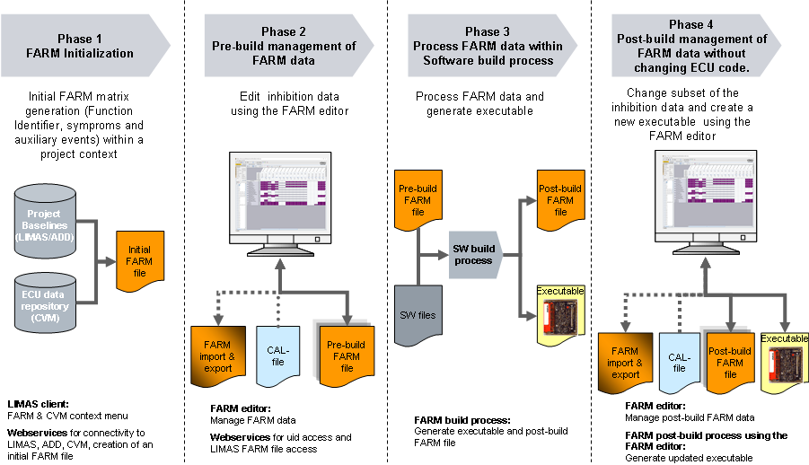
Within this manual the tool features for phase 1,2 and 4 are presented.
Basics
Summary:
The FARM data are represented within a FARM XML file following a defined structure (XML schema). According to that schema all FARM data are stored inside the xml file at dedicated <tags>.
The corresponding XML schema is available on demand at Vitesco.
 The FARM file is checksum secured in order to prohibit a modification
with a not authorized tool chain. If a not authorized change of the
FARM file is done with a general purpose editor, the file will become
invalid.
The FARM file is checksum secured in order to prohibit a modification
with a not authorized tool chain. If a not authorized change of the
FARM file is done with a general purpose editor, the file will become
invalid.
FARM objects
Function identifier FID:
Naming
convention used for the definition at specification level:
Fixed prefix for anyl FID: NC_FID_
Example name: NC_FID_xyz
Display name inside the FRED: FID_xyz
Symptom objects (ERR) from
Error Manager
(ERRM6.x)
Naming convention used for the definition at
specification level:
Fixed prefix for ERRM6 symptoms:NC_IDX_ERR_
Example name: NC_IDX_ERR_xyz
Display names inside FRED: ERR_xyz
Auxiliary objects (AUX)
Naming
convention used for the definition at specification level:
Fixed prefix: NC_IDX_FID_
Example name: NC_IDX_FID_xyz
Display names inside FRED: AUX_xyz
Summary objects (SUM)
Summary
objects are only defined within the FARM editor, they can be used to
group symptoms in order to have a more efficient
inhibition mechanism.
Display names inside FRED: SUM_xyz
FARM object types
Simple object: Scalar
Any scalar
object like FID_xyz, ERR_xyz, AUX_xyz, SUM_xyz.
Complex object: Array
definition
Any object, which is defined as 1...3-dimensional array. Due to
Matlab-Simulink constraints only 2 dimensions shall be used.
Complex objects are defined at specification level have a base-name
and dimensions.
Inside the FARM tool chain the array definitions are represented by
the array definition name, i.e.
base-name[dimension-1][dimension-2], e.g.
FID_xyz[NC_CYLR_NR][NC_SENS_KNK]
The display name inside the editor is defined as base-name and a
symbolic representation of the dimensions in order reduce the
display name length. The symbolic representation of dimensions
is:[...]
Example: FID_1[NC_CYLR_NR][NC_SENS_KNK] would be represented as
FID_1[...][...]
Simple object: Array element
Any
array element like FID_xyz[0]. Array elements are scalar objects,
but assigned to a complex array definition object.
Summary of the display names within FRED and the related names at specification level:
|
Specification name (specification) |
Display name inside the editor |
|
NC_FID* |
FID* |
|
NC_IDX_ERR* (ERRM6.x) |
ERR* |
|
NC_IDX_DIAG* (ERRM4.x) |
ERR* |
|
NC_IDX_FID* |
AUX* |
|
<FARM-object>[index] |
<FARM-object>[...] |
FARM links
Summary links:
Summary links are
used to assign diagnostic objects to summary objects. In order to
establish a summary link, you need the input (ERR_xyz) and the
output (SUM_abc).
Within FRED an own GUI tab is introduced in order to manage the summary links.

Inhibition links
Inhibition links
are used to inhibit functions (FID) by either diagnostic
objects (ERR) or auxiliary objects (AUX) or summary objects (SUM).For
the establishment of inhibition links masks are needed, which use
the mask specific bit information from the inputs.

Properties of FARM links
Category
Optional – This
link category is
possible at pre-build and post build stage. Any link of this catigory can be changed at pre - and post build stage.
Mandatory
– This link category is
only possible at pre-build stage. A mandatory link cannot be changed any more at
post build stage.
Type
Simple link: Link between simple
objects
Example:
ERR_1-> MASK -> FID_1
Complex link incl. link logic: Link, where at least one
complex
object is used either for input or output. For complex links
a
dedicated link logic is necessary, which has to be specified inside
the FARM editor.
Example: ERR_1[NC_CYL_NR] -> MASK + Link-Logic ->
FID_1[NC_CYL_NR]
Time stamp for last change (done automatically)
Reference to a person for the last change (done automatically with the login user except for dedicated merge operations)
Pre-build and post build phase:
During the pre-build phase all FARM data and FARM settings can be changed. Once the pre-build FARM file is processed during the Software build process, parts of the FARM data / settings will be fixed and cannot be changed anymore at the post-build phase.
At the post-build phase only limited actions are possible:
- Add summary objects
- Add optional inhibition links
- Add optional summary links
- Add persons
- Delete summary objects, if they do not contain mandatory summary links
- Delete optional inhibition links
- Delete optional summary links
- Modify summary objects (e.g. description), but not the name
- Modify optional summary links
- Modify optional inhibition links
Main functionality of FRED (tree & spreadsheet view)
Summary:
In order to manage the FARM inhibition links or the summary links the editor provides 2 main tabs, which can be selected by the end user:
- Inhibition link view used for the management of inhibitions links.
- Summary link view used for the management of summary links.
Inside each main view there is a
- Tree component (Project info & tree view) for all FARM objects within the specification context (primary and secondary tree)
- Table component for links between input and outputs as spreadsheet view.
Log items are shown in a separate component at the bottom of the FRED window. Log items can be displayed for the primary and secondary FARM file via tab selection. Log items are shown in a standard spreadsheet view, that can also be exported to e.g. EXCEL.
Start FRED
The application is a single launch application and cannot be started multiple times. If you want to do so, you will get a corresponding error.At the start the disclaimer will pop up to be either accepted (FRED will continue) or rejected (FRED will be cancelled). The starting time of the editor depends on the computer performance and is normally <10s. Within the Vitesco environment the user details are retrieved by a WebService.
Main graphical user interface (GUI)
FRED is a JAVA application with a state of the art user interface based on SWING.The GUI components of the type 'tree component' and 'log items' can be easily hidden/shown by a mouse click on the corresponding component tab

Functionality provided by the FRED main menu bar:
 Load FARM
file from file system
Load FARM
file from file system
 Search for FARM objects in the tree-, spreadsheet-, and log items
component. Details see Search.
Search for FARM objects in the tree-, spreadsheet-, and log items
component. Details see Search. Undo of modifications of the FARM data. Details see Undo.
Undo of modifications of the FARM data. Details see Undo.
Main GUI with primary FARM data - Inhibition link view:

Main GUI with primary FARM data - Summary link view:

Information & tree component
Summary:
The information & tree components shows the appropriate FARM objects, e.g. Function identifier (FID_*), ERRM objects (ERR_*), auxiliary objects (AUX_*) and summary objects (SUM_*) in the baseline context of aggregates and specifications. The items are shown in alphabetical order.
For array objects only the array definition is displayed, but not the array elements. The array elements can be shown inside the spreadsheet view by expanding the corresponding array definition object. In order to save some space, the index of an array is not displayed, but only [...]. The index is shown in the tool tip at mouse over.
The aggregates are represented by the 4char acronym, the specifications are represented by the 8.3 naming convention used at Vitesco Powertrain.
Within the information area administrative information about the loaded FARM file is provided within several pages.
Page 1: File information
Page 2: Statistics on the inhibition links
Page 3: Clock (reserved for future information)
The information and tree component panel can be resized or completely hidden. To hide/unhide the panel just click on 1:Context hierarchy 1st
Information (page 1) and tree component view:
Information (page 2) and tree component view:
The following values are presented in
the format:
Actual maximal value inside the FARM file / limit set within ECU
settings, e.g. 29/125
Color green: Actual max. value < 75% of the limit value
Color yellow: 75% < Actual max. value <= 100 %
Color red: Actual max. value > 100%
The tool tip is active for the numbers Inputs per FID / FID's per input. The tool tip is showing the name of the element having the current maximum value.

Reorganization of tree nodes via drag&drop:
Summary objects and any manual added FID, ERR, AUX can be moved to another tree node by drag and drop. Multi selection is possible.
Aggregate and specification nodes are shown inside the tree view as specified within the FARM file. There is no possibility for rearranging those nodes.
Expand & collapse:
The tree can be fully expanded or fully collapsed by selecting a FARM tree node, activating the right mouse button context menu and activating the corresponding action. Individual collapsing and expanding is also possible using the left mouse double click for the corresponding node.
Resizing the info & tree component:
The tree window can be resized by navigating to the separation line between tree view and spreadsheet view, pressing the left mouse button and moving the mouse to the intended position.
FARM object colors / formats / icons
Symbols for FARM objects inside the tree component:
 Scalar summary object
Scalar summary object
 Array
summary object
Array
summary object
 Scalar FID
object
Scalar FID
object
 Array FID
object
Array FID
object
 Scalar
ERRM object
Scalar
ERRM object
 Array
ERRM object
Array
ERRM object
 Scalar
auxiliary object
Scalar
auxiliary object
 Array
auxiliary object
Array
auxiliary object
 All FARM objects, which are
present in the spreadsheet view, are marked with an arrwow in front of
the the object name.
All FARM objects, which are
present in the spreadsheet view, are marked with an arrwow in front of
the the object name.
Colors / formating used for FARM objects inside the tree view:
- Black: Objects, that are extracted by a tool supported process from the Vitesco systems. They cannot be changed or moved inside the context hierarchy any more.
- Blue: Manual added objects. They were either added manually by an user or added by a import / merge action. Manual added FARM objects can be changed / moved inside the context tree. No change is possible for those elements at post-build.
 and
red: Severe inconsistency between data definition for
complex FARM objects inside ADD and the table of failure at
Software. The problem occurs, if not all array elements of an array
definition are defined inside the table of failure file at
Software. Red marked objects can only occur at the post build FARM
file.
and
red: Severe inconsistency between data definition for
complex FARM objects inside ADD and the table of failure at
Software. The problem occurs, if not all array elements of an array
definition are defined inside the table of failure file at
Software. Red marked objects can only occur at the post build FARM
file.- Striked through ERR objects, which are not present in the table of failure, but present in the specification (LIMAS-ADD-CVM). Striked through FARM objects can only occur in the post build stage.
Tree view filter
Summary:
Filter are provided for the tree view in order to show dedicated FARM objects on use demand. The filter are provided for the different FARM objects (FID, ERR, AUX, SUM) and for special use cases in addition.
Filter are only provided within the 'Inhibition links' tab, for the 'Summary links' tab and the 'ERR->FID Relation' tab no filters are provided, as the filter is already preconfigured. For 'Summary Links' tab only SUM's and ERR's are shown, for the 'FID->ERR Relation' tab only FID's and ERR's are shown.
 Filter
active: A filter setting can be configured by a left mouse click on
the filter symbol.
Filter
active: A filter setting can be configured by a left mouse click on
the filter symbol.
 No filter
active, all FARM objects will be displayed depending on
collapse/expand status of the tree.
No filter
active, all FARM objects will be displayed depending on
collapse/expand status of the tree.
For setting a filter, click on the filter symbol and choose the corresponding filter setting (combination possible). The filtered tree is the basis for the drag & drop actions to the table view. The top level check box activates or deactivates the filter at all.
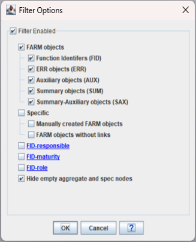
The following filter settings are provided:
1) FIlter for viewing different types
of FARM objects
:
- Show only FID's inside the tree
- Show only ERR's inside the tree
- Show only AUX's inside the tree
- Show only SUM's inside the tree
2) Filter for viewing specific FARM
objects:
- Shon only manually generated FARM objects
- Show FARM objects without direct links.
This is interesting to create a grid view with e.g. all FID's which are
not yet inhibited. If
this option is set for ERR's which are only inderectly linked to FID's
via SUM objects, those ERR's will also be displayed, as they are not
directly linked to FID's.
3) Filter for viewing FID-objects based on the following meta data
- FID responsible person (Single & multi select of persons is possible)
- FID-Maturity (Single & multi select of maturities is possible)
A combination of filters is possible.
 The
drag&drop actions from
the tree view to the matrix view works based on the filtered view,
i.e. if the FID filter is active and a context node is draged to
the matrix view, only the FID's within the context node are used to
fill the matrix view. Also the logic for draging the tree
view
objects to the matrix view does only use the filtered objects.
The
drag&drop actions from
the tree view to the matrix view works based on the filtered view,
i.e. if the FID filter is active and a context node is draged to
the matrix view, only the FID's within the context node are used to
fill the matrix view. Also the logic for draging the tree
view
objects to the matrix view does only use the filtered objects.
Tree view <-> Matrix view
Summary:
The objective is to use the matrix or spreadsheet view for viewing the links between inputs and outputs as known from Excel.
The content of the matrix view can be modified by the user in order to configure the view according to his needs:
- Add new elements to the matrix
view.
The matrix can be filled by drag&drop of FARM objects from the tree to the matrix view or by menu entries.
There are 2 alternative
'fill logics' to be selected by the user, either output or input
oriented (details see below).
- Remove elements from the matrix
view.
Alternative 1: Select objects in the matrix view by selecting the corresponding objects and pressing the button or
activating the right mouse
context menu and choosing the corresponding command.
button or
activating the right mouse
context menu and choosing the corresponding command.
Alternative 2: Select object in the tree view and use the right mouse context menu to remove the corresponding objects from the matrix view. This functionality allows also to remove all objects from context nodes like specifications or aggregates. The corresponding functionality provided in the right mouse context menu, but will only have effect, if the corresponding objects can be removed from the matrix view.
User controls to modify matrix view:
Depending on the logic (output or input oriented) the current spreadsheet view will be updated based on the FARM objects used for rows/columns.
Either columns or rows are selected in the matrix view or FARM objects are selected in the tree view to actiivate the corresponding function. Select nodes or objects in the tree view and use the corresponding functionality inside the right mouse context menue.
The background color of the columns indicate the relation to the FARM file (white background color = 1st FARM file, gray background color = 2nd FARM file). Row objects existing in both FARM files are not displayed within 2 rows, but for usability reasons only in 1 row. If a row object is not existing in the other FARM file, there is a
Logic to be applied for filling the spreadsheet view:
All linked input objects to selected output objects will be transferred to the matrix view.
The
logic is only applied for filtered objects inside the tree view.
Example: If a filter for FID's is activated and you apply the logic
'output oriented', no input will be dragged to the matrix view, as no
input (ERR;AUX,SUM) is within the tree view.
You can activate the corresponding
logic while pressing the
corresponding button  .
.
Example: If a FID object is selected in the tree view and transferred to the matrix view, all linked input objects (ERR, AUX, SUM) will be transferred to the matrix view and the corresponding links are shown.
If a hierarchy node (root / aggregate / spec) is chosen, the logic will be applied for all relevant FARM objects below.
 Logic: Input
oriented:
Logic: Input
oriented:
All linked output objects to selected input objects will be transferred to the matrix view.
The logic is only
applied for filtered objects inside the tree view.
Example: If a filter for ERR's is activated and you apply the logic
'input oriented', no output will be draged to the matrix view, as no
output (FID) is within the tree view.
You can activate the corresponding
logic while
pressing the corresponding button  .
.
For ERR's there's a specific logic implemented, that in addition to the selected ERR's also all linked SUM's are transferred to the table view.
Example: If a ERR object is selected in the tree view and transferred to the matrix view, all linked FID's (use case: inhibition matrix) will be transferred to the matrix view and the corresponding links are shown.
If a hierarchy node (root/ aggregate / spec) is chosen, the logic will be applied for all relevant FARM objects below.
All FARM objects, which are transferred to the matrix view, are marked with an arrow in front of the corresponding FARM objects inside the tree view.
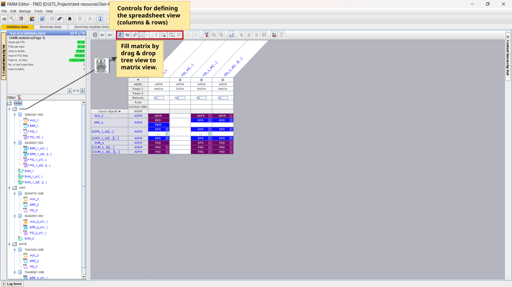
Matrix or Spreadsheet view
Summary:
The spreadsheet view is used for the different use cases:
- Show inhibition links
- Show summary links
- Show the FID->ERR relation

General functionality within a spreadsheet provided by the menu bar icons
Basic matrix setting:
 Table
settings: The following table properties can be changed by the
corresponding panel, which will pop up when clicking on the table
settings icon:
Table
settings: The following table properties can be changed by the
corresponding panel, which will pop up when clicking on the table
settings icon:

.
Expand / Collapse all complex array rows/columns:
 Collapse all complex row objects
Collapse all complex row objects
 Expand all complex column objects
Expand all complex column objects
 Collapse all complex column objects
Collapse all complex column objects
As a result of the expand functionality all elements of a complex object (array) are shown below the array definition.
The array elements have fixed indent and the prefix --> before the name of the element.

Deactivate the manual resorting for columns/rows, if a manual resorting was done before:

 After the
manual resorting of columns / rows by drag & drop actions the
manual resorting can be deactivated seperately for rows/columns by
pressing the corresponding buttons. The buttons
are only active, if a manual resorting was done before. All rows and
columns, which are manually resorted are marked with a
After the
manual resorting of columns / rows by drag & drop actions the
manual resorting can be deactivated seperately for rows/columns by
pressing the corresponding buttons. The buttons
are only active, if a manual resorting was done before. All rows and
columns, which are manually resorted are marked with a  within the row/column header.
within the row/column header.

Spreadsheet view filter:
 Table Content Filter active. Show only filtered rows/columns.
Table Content Filter active. Show only filtered rows/columns.
 Table content filter inactive.
Table content filter inactive.
 Compare filter for 2 loaded FARM files active. Differences
are
shown using green/red bars inside link cells.
Compare filter for 2 loaded FARM files active. Differences
are
shown using green/red bars inside link cells.
 Compare filter for 2 loaded FARM files inactive
Compare filter for 2 loaded FARM files inactive
 Compare filter for user selected rows or columns within the
spreadsheet view active.
Compare filter for user selected rows or columns within the
spreadsheet view active.
 Compare filter for user selected rows or columns within the
spreadsheet view inactive.
Compare filter for user selected rows or columns within the
spreadsheet view inactive.
Details for the filter see FilterForMatrixView
Prepare spreadsheet view for pdf export / printing:
In order to be able to export the spreadsheet view for viewing / review / print purposes without using FRED a corresponding functionality is provided.
Copy / cut / paste functionality for FARM links:
In order to easily modify the matrix content a copy/cut/paste functionality for link cells is implemented. Copy / cut / paste can either be used by the well known keyboard commands or by the menu bar icons.
The following basic copy&paste use cases are supported:
- Copy&paste of a single links to either one target cell or to a set of taget cells, which are selected before the paste operation.
- Copy&paste of a complete row or column to other rows/columns.
Summary link resolver:
 FID -> SUM links links are resolved by FID (->SUM) -> ERR links
(view filter only), if the SUM object is linked to ERR objects.
FID -> SUM links links are resolved by FID (->SUM) -> ERR links
(view filter only), if the SUM object is linked to ERR objects.
Resolved SUM links are shown having a special summary icon.
This does
not have any effect on the FARM data.
 Summary objects are shown (default).
Summary objects are shown (default).
Details for the summary link resolver see SummaryLinkResolver
Column header functionality
Each column header entry (for inhibition links it's the FID name, the AGGR relationship, the responsibility and the maturity) can be sorted alphabetically by clicking on the corresponding sorting arrow in at the left side of the corresponding column header object.The values for the responsibility and the maturity inside the column header (inhibition link tab only) can be changed directly either for single cells or for a multi selection of FID columns.
In order to change a single value just click inside the cell and change the value using the selection list.
For a multi selection you have to click inside the cell first, then do a multi selection of FID columns and afterwards change the value of the cell. The change will be applied for all selected FID columns.
Maturity icons used for the FID column header:
 Maturity level 1 for FID's:
---
Maturity level 1 for FID's:
---
 Matuirity level 2 for FID's:
PRELIMCALIBRATED
Matuirity level 2 for FID's:
PRELIMCALIBRATED
 Matuirity level 3 for FID's:
CALIBRATED
Matuirity level 3 for FID's:
CALIBRATED
 Matuirity level 4 for FID's:
CHECKED
Matuirity level 4 for FID's:
CHECKED
 Matuirity level 5 for FID's:
COMPLETED
Matuirity level 5 for FID's:
COMPLETED
Row header functionality
Each row header entry (for inhibition links it's the name of ERR's AUX's, SUM's, the AGGR relationship and on demand 2 columns for the OBD information) can be sorted alphabetically by clicking on the corresponding sorting arrow at the top of the corresponding row header object.
The row header can be configured (number of dispayed row header columns) by a right mouse button context menu. The context manu is active when clicking in the row header area.

Icons used inside the matrix content area
Icons used for the inhibition link cells:
 Icon for a mandatory complex linhibition link (inhibition
between complex objects)
Icon for a mandatory complex linhibition link (inhibition
between complex objects)
 Icon for a optional complex linhibition link (inhibition
between complex objects)
Icon for a optional complex linhibition link (inhibition
between complex objects)
 Icon
for complex linhibition link node, where only manual generated
links between single array elements are set (either mandatory or
optional)
Icon
for complex linhibition link node, where only manual generated
links between single array elements are set (either mandatory or
optional)

 Icons (mandatory/optional) for generated inhibition link
(Link
logic defined at the level of the complex object)
Icons (mandatory/optional) for generated inhibition link
(Link
logic defined at the level of the complex object)

 Icons (mandatory/optional) for manual generated links between
array elements, where no link logic is defined.
Icons (mandatory/optional) for manual generated links between
array elements, where no link logic is defined.
Color scheme for the matrix view:
The inputs and outputs are represented with the same color scheme than within the tree view (text color, background color).
The links are represented in different colors for the categories 'mandatory' and 'optional'.
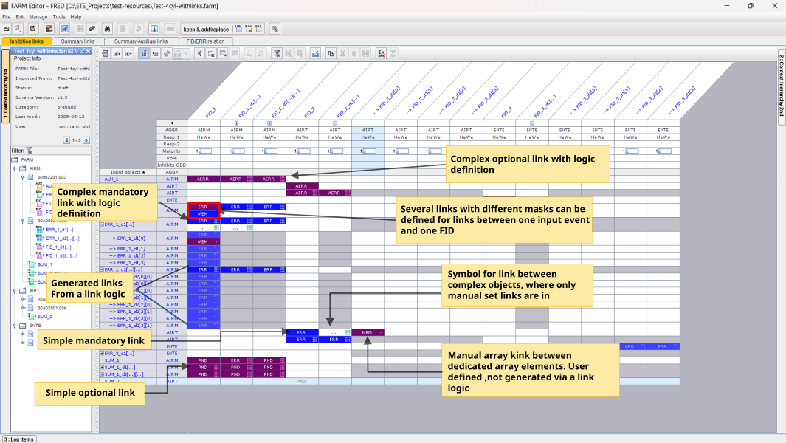
Filter for the matrix view
Summary:
In order to filter the matrix view for a predefined content, several filters are available, which can be also combined. Please be aware, that active filters may influence the performance of the related spreadsheet actions like modifying inhibition links.
Content filter
The content filter will reduce the number of rows/columns due to the filter options set by the user. The content filter panel will pop up by the mouse click on the corresponding symbol (toggled):The options inside the panel will be active, if the content filter is enabled at all (check box at the top of the filter panel), several options can be specified in parallel.
Details for the content filter option: OBD conflicts
Show all outputs (either FID's inside inhibition links or SUM's inside Summary links), which are controlled by a mixture of OBD relevant inputs and not OBD relevant inputs.
The
filter can only show a valid result, if a calibration data file is
loaded, where the OBD info is calibrated. In order to load a
calibration date file see LoadCalibrationDataDetails for the content filter option: Persons, Maturities
Person and maturity is related to the FID's inside the inhibition link matrix. It will have no effect within the summary link matrix, as no FID's are present.
Details for the filter option: OBD conflicts
This filter is only showing FID columns (inhibition matrix) ors SUM columns (summary matrix), where inputs are linked, which are partly OBD relevant, partly not.
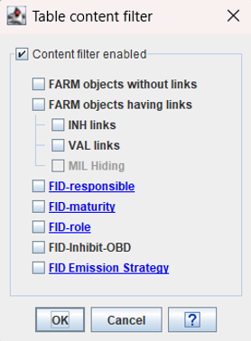
Compare filter
The compare filter will either compare the spreadsheet view of two FARM data sources or will compare user selected rows or columns. The compare algorighm will always compare 2 corresponding link cells and show the corresponding result as a colored bar inside the corresponding link cells.The compare filter will add a red or green vertical bar inside the link cells of the spreadsheet view in order to indicate, that the corresponding cell content is identical or not based on the compare options.
The compare filter will also reduce the the number of columns/rowns dependent on the compare options.
Compare of 2 FARM data sources:
The compare will work on the link cells provided in the spreadsheet view, so the compare can be applied on several abstraction levels of the complete FARM data.
The algorithm will compare the link cells of 2 different FARM files with identical input /output names. In order to display the columns of the 2 FARM files near to each other baed on the FID name (inhibition link view) or SUM name (summary link view), the sorting shall be done based on the name.
If a different sorting (e.g. aggregates, responsibility..) is activated, it is not ensured, that the columns with identical names within the 2 FARM data sources are located near to each other.
Toggle icons for the compare of 2 data sources:
The corresponding functionality will only be provided, if 2 data sources are loaded.
Compare of user selected rows or columns:
The compare will work on the link cells of selected columns or rows. The column or row, which is selected first, will be the reference for the comparison. For the selection of 2 rows/columns it doesn't matter, but if >2 rows/columns are selected the sequence of the selection is important, as it determins the algorighm for the comparison. The differences in the link cells are shown in comparison to the reference column/row, which is the firstly selected one.
Toggle icons for the compare of user selected rows or columns:
The corresponding functionality will only be provided, if at least 2 rows or columns are selected.
Compare filter options:
The compare filter options are generic never mind, whether the compare of 2 data sources or the compare of user selected rows/columns is selected.
The compare will be activated by checking the box 'Compare Enabled' on the top of the panel.

The are two basic compare modes possible
Logic compare mode
The logic compare is intended to support the compare of the link definitions. It will bring any difference in link definitions, whereas the complex link logic and the category of the link are part of the comparison algorighm.
The following attributes are taken into account for the logic compare:
- Mask : Acronym, bit definition
- Link category (optional / mandatory)
- Link logic (if available): Iterator, modulo, offset
- Name mapping of ERR's (if there is one)
No descriptive parts are analyzed for the logic compare view.
Binary compare mode:
The binary compare is intended to support the compare of inhibition links at the binary level. Therefore, no complex link definitions are taken into acount, but only the links between array elements, and no link category.
The following attributes are taken into account for the binary compare:
- Mask: Acronym, bit definition
- Name mapping of ERR's (if there is one)
Compare view examples
1) Logic compare view of 2 FARM data sources:
The compare view is working on the spreadsheet view only (not on all FARM data) and providing the result for the comparison of 2 corresponding link cells within the primary and secondary FARM file.
Complex link nodes are marked as different, if either the complex link definition is different or if additinal different manual defined links between array elements are in.
Sorting of columns shall be done based on the name !

2) Binary compare view for 2 FARM data sources for unequal links only:
The compare view is working on the spreadsheet view only (not on all FARM data) and providing the result for the comparison of 2 corresponding link cells within the primary and secondary FARM file.
The binary compare view will only take into account differences, which are relevant at the binary level (inside the ECU), but will not take care about logic differences (e.g. complex link definition different or category of the link different)

3) Compare view for 2 user selected FID columns within 1 FARM data source before the filter is activated:
The compare view is working on the user selcted columns or rows inside the spreadsheet view. The selection can be done for columns/rows within 1 or 2 FARM data sources.
The comprison is provided for >=2 selected columns or rows, where the order of the selection defines the comparison logic. The first selected row / column is always the reference for the comparison.
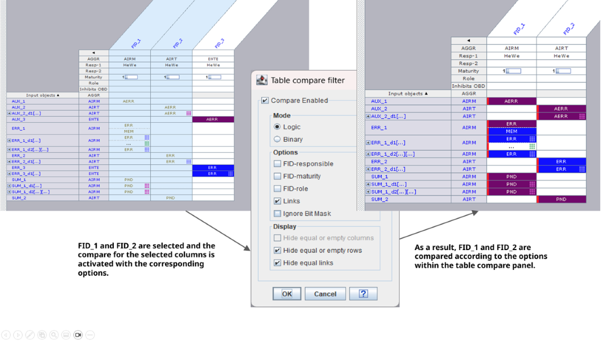
Result of the compare after the compare filter is enabled, the options are selected and the OK button is pressed:

Compare view for 3 user selected FID columns within 1 FARM data source before the filter is activated:
The compare view is working on the user selcted columns or rows inside the spreadsheet view. The selection can be done for columns/rows within 1 or 2 FARM data sources.
The comprison is provided for >=2 selected columns or rows, where the order of the selection defines the comparison logic. The first selected row / column is always the reference for the comparison.
In the example below FID_1 was selected first and is therefore the reference column for the comparison.
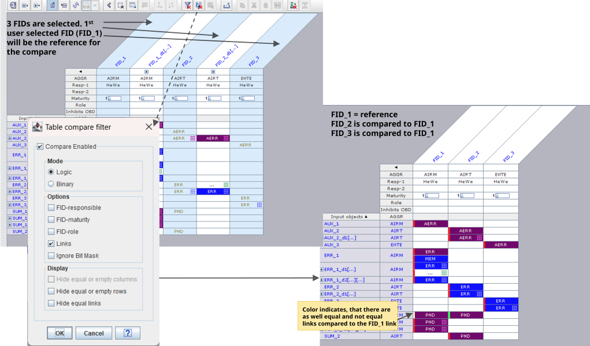
Result of the compare after the compare filter is enabled, the options are selected and the OK button is pressed:

Summary link resolver
There is a special feature implemented to resolve the summary object related links and show the result within the spreadsheet view as direct links between the ERR's and the FID's. The summary link resolver is useful, if e.g. a FARM HEX file is loaded and the corresponding summary objects inside the HEX file cannot be assigned to the original summary object name. So a comparison of the HEX related FARM data to a FARM file will fail for all summary object related links. If the summary related links will be resolved, the comparison will work fine.Resolving the summary objects means:
- Remove the SUM's from the spreachsheet view
- Show the links between ERR's and FID's using a SUM object directly into the spreadsheet view using a specific icon inside the link cell :
The summary
link resolver will not add all necessary ERR's to the
spreadsheet view, it will just use the FARM objects existing in the
spreadsheet view.In order to get a valid result for resolving the summary links either the full matrix shall be loaded or at least all ERR objects. To load all ERR objects into the spreadsheet view simply used the tree view fileter, select ERR objects, use the drag&drop logic 'output oriented' and drag all objects into the spreadsheet view.
As a lot of ERR's may be shown in the spreadsheet view, you can activate also a content filter for the spreadsheet view to show only those rows/columns, which have links. This will reduce the matrix view to the relevant data.
The links cells containing resolved summary links can't be edited, as it's only a generated view.
The summary link resolver is only provided for the inhibition link matrix.
Toggle icons represent the summary link resolver:
Example for resolving the simple summary links:
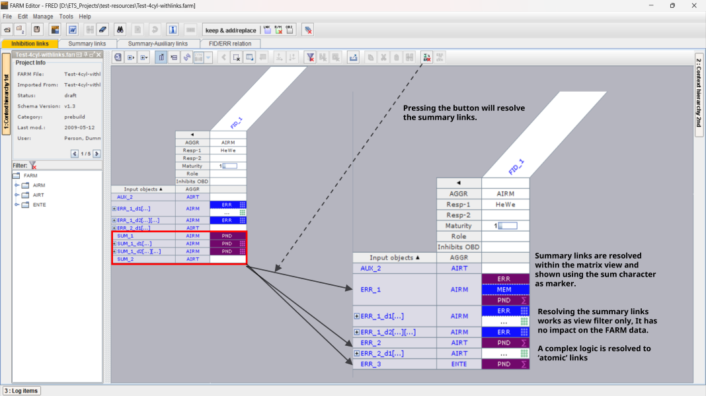
Example for resolving simple and complex summary links. As a result of the resolving stage only the 'atomic' links between ERR's and FID's are displayed, but not the related complex link logic.

Log items
Summary:
The log items show information, warnings and errors for the following FARM related operations:
- Add new person
- Load FARM exchange file to 2nd data source (problems are reported)
- Any link related copy&paste operation within the spreadsheet view
- Any merge related operation from the 2nd to the 1st FARM file
No log items are reported for delete operations and single modify operations via the link editors (inhibition link / summary link).
The log items are shown at the bottom of the main panel, but can be fully collapsed or resized to a minimum.
The log items are provided for the primary and secondary FARM file by choosing the corresponding tab.
For all copy & merge operations log items are written. Each merge action is recorded according the the log item class (information, warning, error).
As for complex merge operations the file will get very large it is recommended to review and delete the log items at each session.
Log items can be deleted individually by choosing log items in the corresponding table view or they can be deleted in one shot usind the Manage->Clean functionality of the main menu bar.
 Please
take care to
delete log items regularly before the save stage, as they increase
dramatically the file size and slow down the performance of the
user actions.
Please
take care to
delete log items regularly before the save stage, as they increase
dramatically the file size and slow down the performance of the
user actions.
Modify pre-build FARM matrix (primary FARM file)
Summary:
The objective of the pre-build phase is to create a valid FARM matrix including all mandatory inhibition links at least. The pre-build FARM file is used for the Software build process in order to generate the corresponding FARM data within the ECU executable.
The FARM data can be managed with the FRED only.
Constraints:
FRED installed. User trained.
Load / save primary FARM file
Summary:
The FARM data are represented in FARM xml files, which can be managed within a file system. FRED provides the following file management operations:
Load FARM
file from file system Save FARM
file to
file system
Save FARM
file to
file system
 Save FARM
file to
file system as
Save FARM
file to
file system as
File load
For the loading stage the corresponding FARM format is checked including the checksum. If the format is not valid, the file cannot be loaded and the user gets a corresponding message. If only the checksum is not correct the user gets a message, but can continue to load the FARM file.
In addition the file name is checked for consistency. If the file name, which is stored inside the FARM file differers to the physical file name, a warning is issued and the user can decide to correct the file name mismatch (file will be updated at the load stage).
A mismatch of the file names is a consequence of renaming the FARM file at the file system without use of the FARM editor.
After the file load stage the spreadsheet views of the last save stage for the corresponding file will be restored, if the file was not modifed by another person in the meantime.
A user login for the modification operations is necessary, because the modification of e.g. links is tracked based on the timestamp and the selected user.
File load panel:

File save (as)
For the saving stage a change comment has to be given and the lifecycle status has to be set.
Valid files cannot be overwritten. If the lifecycle is set to 'valid' at the save stage, it will be saved with the attribute read only.
 The
checker will be automatically started, if a FARM file shall be saved
with lifecycle status 'valid'. If the checker detects an error, the
file cannot be saved as 'valid' file, but only as 'draft'. All errors
have to be corrected before save with lifecycle status 'valid' is
possible.
The
checker will be automatically started, if a FARM file shall be saved
with lifecycle status 'valid'. If the checker detects an error, the
file cannot be saved as 'valid' file, but only as 'draft'. All errors
have to be corrected before save with lifecycle status 'valid' is
possible.
All save operations use a corresponding file managment user interface as for the file load stage..
FInd below an example for a save menu.
At the save stage the following menu will appear for change comment entry and setting the lifecycle status:
For the change comment either a user
defined
text can be entered or he can choose from the existing change
history pressing the corresponding button:  .
.
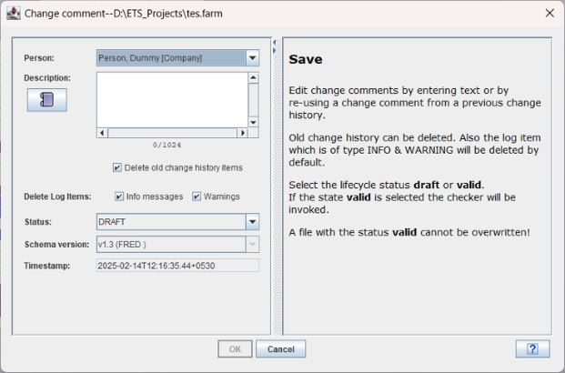
Constraints:
Save / save as with lifecycle status 'valid' is not possible as long as the checker detects errors within the FARM file.
Manage FARM ECU settings (FIM general)
Summary:
There are FARM configuration data to be set at the pre-build stage. All relevant data can be set using the FARM ECU settings panel. Within the panel a context help is available for the different configuration data to be set.
For each setting a information is availble pressing the corresponding i - button. Therefore no more detailed information is given here.
The FARM ECU settings cannot be changed at the post-build phase.
Constraints:
Values must be set before entering the build process, as the values cannot be changed afterwards.
Workflow:
Start FRED -> Load primary FARM file -> select Edit -> select FARM ECU settings

Manage masks
Summary:
Masks are necessary to link input objects (i.e. ERRM objects, auxiliary objects or summary objects) to function identifiers. The Inhibition mask defines which information - delivered by the used error management aggregate (e.g. ERRM 6.0) or auxiliary object management is significant for the link in which the mask is used.
 There
exists no
tool-based check if the defined mask values fit to the interface of
the error management implementation in the ECU. Therefore it is up
to the user to check initially and after changes in the error
management interface if the mask value definition and the error
management implementation fit together.
There
exists no
tool-based check if the defined mask values fit to the interface of
the error management implementation in the ECU. Therefore it is up
to the user to check initially and after changes in the error
management interface if the mask value definition and the error
management implementation fit together.
Masks for managing ERRM objects are different to those managing auxiliary objects. They are classified by the type (ERR and AUX).
Masks have to be entered/modified inside FRED. For the management of masks, a special edit panel is available. Details for managing masks you find in the context help of the panel.
Edit -> FARM inhibition bit masks

The number of masks you can specify is limited by the configuration value inside FARM ECU settings.
In this example the value is set to 5, i.e. you can create 2^5 = 32 masks

Mask acronyms shortly identify different masks. The acronym consists of only few characters, typically 4 characters. The acronym is used on several locations in the FARM editor for identifying masks in a inhibition link - therefore use significant characters to express the functional background of the mask. Examples could be mask acronym "ERR" for the diagnostic status information "error detected" or "PND" for the diagnostic status information "diagnostic pending".
Mask acronyms have to be unique within one FARM data base. Each mask acronym may only be defined once.
Mask long names are used to describe further the functional background of a mask in a significant way. The long name has to be unique within one FARM configuration data base. The mask long name is an obligatory entry and will be also displayed at the mask selection within the inhibition link edit panel..
The mask long name length is limited by the editor.
The mask description is used to provide further detailed description on the defined inhibition mask.
The mask description is an obligatory entry.
Mask values
|
Single bit value of mask |
Value description |
|
1 |
Bit is significant. A value of 1 indicate that the information on bit position x in the diagnostic object status information evaluates to TRUE if the bit is 1. |
|
0 |
Bit is significant. A value of 0 indicate that the information on bit position x in the diagnostic object status information evaluates to TRUE if the bit is 0. |
|
- |
Bit is don't care and therefore not evaluated during processing of the input object status. In case all bits of a mask definition have the bit value "-", this results in a inhibition link which is active neglecting the input objects status, as all bits are don't care. The linked function will always be inhibited. |
|
X |
Special value used to define a dedicated "no inhibition link" mask. If all bits of a mask are set to this value, the user can use this mask to indicate e.g. in the inhibition matrix that between an input and output no effective inhibition link shall be set and exist. |
If a maks with XXXXXXXX ist used, the corresponding link using this mask is desplayed specifically inside the spreadsheet view, as the link will have no effect on the FARM related ECU functionality, it is for documentation reasons only. The link can be used to document hard coded links inside the ECU-SW or to add specific hints for this link cell (e.g. no link shall be set here). Modify, compare and merge functionality for link cells using the XXXXXXXX mask will work as for 'normal' masks, the only difference is the different display mode witin FRED and the specific marking of those links inside the documentation (field greyed)
.

Edit panel for masks:

Constraints:
- Masks can only created/changed at the pre-build stage.
- Mask acronyms and long names have to be unique within a FARM configuration file
- Masks using the bit value "X" have to define this value for all bits within the mask
- If masks are deleted which are already used in any Inhibition link the corresponding link(s) are deleted from the FARM configuration upon user acknowledge
Manage summary objects
Summary:
Summary objects are used to links more efficiently a set of diagnostic input objects to a function identifier. In order to use summary objects, they have to be defined first.
Summary objects can be modified at the pre- and post build phase.
Inside FRED a specific panel for editing summary objects is provided.
As summary objects shall be assigned to context nodes inside the tree view, first a context node shall be selected and then a summary object can be added.
Constraints:
Number of summary objects which can be added is limited to the number specified within FARM ECU settings. In the example below the number of summary objects is limited to 100.

Workflow:
Navigate to the corresponding tree node (either top level FARM node or aggregate node or spec node) and use the right mouse button context menu.
Choose: Add new SUM object. A corresponding panel will pop up for the necessary user entries.
In order to define a complex array object just choose the corresponding radio button, specify the number of dimensions and the corresponding dimension indices.
Only array indices, which are defined in the FARM file can be used (pop up list).
GUI example for creating a new simple SUM object:

Within the edit panel you have to specify the details of the summary object. Summary objects can be defined as scalars or arrays of 1...3 dimensions.
A description is mandatory. The prefix of the name (SUM_) shall not be changed.
After pressing the OK button the summary object is added to the tree at the specified context node. As it is a manual generated object, the name is displayed in blue letters.
You can reassign a summary object to another context node by drag and drop within the tree view.
You can modify the summary object by selecting the summary object and double clicking the object.
You can delete a summary object by selecting the object and then choose delete via right mouse button context menu or pressing the del button.
At the post build stage only the description of summary objects can be modified, no more renaming is possible.
 Deleting a summary object will
also delete all related links to that summary object! At the
post-build stage only those summary objects can be deleted, which do
not have mandatory links (either summary links or inhibition
links).
Deleting a summary object will
also delete all related links to that summary object! At the
post-build stage only those summary objects can be deleted, which do
not have mandatory links (either summary links or inhibition
links).
In order to delete all summary objects the Manage->'Clean FARM objects' can be choosen.
Manage missing FARM objects (FID/ERR/AUX)
Summary:
If FARM objects are needed, which were not extracted via FRAX from LIMAS-ADD-CVM, they can be introduced within FRED at the pre-build phase. This shall be an exceptional case, as the data should be specified to 100% at the specification level. No manual added FARM objects shall be present before SOP.
FARM objects, which can be added:
- Function identifier (FID_*)
- Diagnostic objects (ERR_*)
- Auxiliary objects (AUX_*)
Constraints:
Adding new FARM objects as function identifier, diagnostic objects, and auxiliary objects is only possible at the pre-build phase.
Workflow (example for Function identifier, FID's):
Navigate to the corresponding tree node (either aggregate node or spec node) and use either right mouse button context menu or the Edit main menu panel.
FID edit panel, example for a scalar object.
 In
contrast to the
edit panel for diagnostic and auxiliary objects the FID maturity and
the FID responsible have to chosen. The FID maturity indicates the
maturity of the inhibition links for that FID.
In
contrast to the
edit panel for diagnostic and auxiliary objects the FID maturity and
the FID responsible have to chosen. The FID maturity indicates the
maturity of the inhibition links for that FID.

Also complex FID's can be added using the edit panel. Only those array indices can be used, that are existing within the FARM file.
Within the edit panel you have to specify the details of the objects. Any object can be defined as scalar or array of 1..3 dimensions.
A description is mandatory. The prefix of the name (FID_, ERR_, AUX_) shall not be changed.
After pressing the OK button the summary object is added to the tree at the specified context node. As it is a manual generated object, the name is displayed in blue letters.
You can reassign an object to another context node by drag and drop.
You can modify the object by selecting the summary object and double clicking the object.
You can delete a manual added object by selecting the object and then choose delete via right mouse button context menu or pressing the del button.
 Deleting
a
manual added FARM object will also delete all related links to that
objects !
Deleting
a
manual added FARM object will also delete all related links to that
objects !
Manage summary links
Summary:
Summary links are used to link diagnostic objects to summary objects, which are used to inhibit function identifier. Once a summary object incl. links is defined, it's more efficient to use the summary object in the inhibition matrix, as only one summary object has to be linked to the corresponding FID's instead of several ERR's, which are linked to the summary object.
Constraints:
Only optional summary links can be modified at the post build stage.
Workflows:
Add a new simple summary link
Summary:
Simple links are meant to be links between scalar elements for input and output, i.e. neither input object nor output must be of the type array !
Workflow:
Choose the tab 'Summary links' -> choose the needed FARM nodes from the tree view and transfer them to the matrix view -> Navigate to the intersection of ERR and SUM (link cell), where you want to establish a link. -> Double click left mouse button -> Choose category -> Enter description -> press OK button.
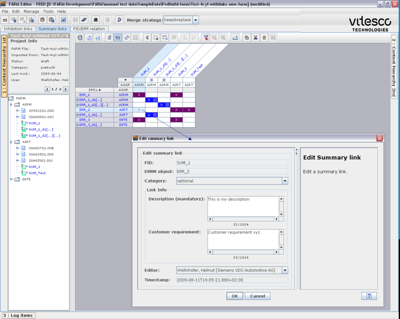
Add a new complex summary link
Summary:
Complex links are meant to be links between input and output objects, where at least one object is of the type array.
Example:
You want to assign ERR_test_1[NC_CYL_NR] to SUM_test[NC_CYL_NR]
NC_CYL_NR = 4
Objective is to use an algorithm for the link between the arrays in order to be able for reusing this algorithm if the array index will change (e.g. if NC_CYL_NR =6). If you would link single array elements, there is only a limited reuse possible.
Nevertheless it's also possible within the editor to link dedicated array elements without logic.
For a detailed description of the link generation algorithm see
Workflow:
Choose the tab 'Summary links' -> choose the needed FARM nodes from the tree view and transfer them to the matrix view (recommendation: ) -> Navigate to the intersection of ERR and SUM (link cell), where you want to establish a link. -> Double click left mouse button -> Choose category -> Enter description -> press Next -> specify complex link logic -> press OK button.
In order to specify a complex links an algorithm 2 alternatives are provided:
- Use predefined logic patterns: 1:1, N:M, N:1, 1:M Details see LogicPattern.
- Define
iterators and use those iterators inside the dimensions of the arrays
to be linked. In addition to the iterator an offset and a modulo
operation can be used. The generated links are presented in a window at
the bottom of the panel in order to verify, whether the logic works as
intended. Details see

After pressing the OK button, the link result is (arrays have to be expanded in the matrix view):

Add new summary link(s) by copy & paste
Summary:
If there are already summary links in the matrix, additional summary links can be added by copy&paste. You can apply copy&paste for single cells, but also for a complete SUM or an ERR.
Constraints:
At the post build stage you can only set optional links. You cannot paste simple links to complex cones and vice versa. Example: ERR_1 -> SUM_1 shall be copied to ERR_1 -> SUM_2[NC_CYL_NR]. That's not possible, because for the complex link more information is necessary.
Copy & paste of a single summary link
Workflow:
Navigate to the link you want to copy inside the matrix view -> select the link -> use right mouse context menu and choose copy/cut (alternative CRTL-C, CTRL-X) -> select target links cells via single or multi selection -> choose paste via right mouse click context menu (alternative CRTL-V) -> Confirm merge and adapt if necessary the descriptive parts.
As a result the corresponding link will be copied to the target area. It will be checked , whether a link can be applied or not according to the link type. You cannot paste links of different categories, i.e. you cannot paste a simple link cell to a complex link cell.
A complex summary link is defined by its complex input or/and output and you can only copy&paste complex summary links of the same type, i.e. the complex inputs or/and outputs must have the same number of dimensions and must have the same dimension index.
Example:
Copy link: ERR_test1[NC_CYL_NR] -> SUM_test[NC_CYL_NR]
to ERR_test_2[NC_CYL_NR] -> SUM_test_a[NC_CBK_EX_NR]
will not work, as the summary objects have different array indices.
Workflow within the GUI for the copy & paste of a single summary link::


Copy & paste of all SUM related summary links
Summary:
In order to copy the complete set of links from ERRM objects to a summary object a copy & paste functionality is provided at the level of the summary links in the summary link matrix view.
Workflow:
Navigate to summary object you want to copy inside the matrix view -> select the links by selecting the column -> use right mouse context menu and choose copy/cut (alternative CRTL-C, CTRL-X) -> select target summary object columns via single or multi selection -> choose paste via right mouse click context menu (alternative CRTL-V) -> Confirm merge and adapt if necessary the descriptive parts.
As a result all corresponding links will be copied to the target area. It will be checked , whether a link can be applied or not according to the link type. You cannot paste links of different categories, i.e. you cannot paste copied links to a simple summary object to a complex summary object and vice versa.
If you want to copy&paste the links to complex summary objects, the type of the target summary object(s) has to be identical to the copied source. Identical means to have the same number of array dimensions and the same array index.
Example: You cannot copy SUM_test[NC_CYL_NR] to SUM_test_a[NC_CBK_EX_NR], because they have a different array index.
Even
if not all
summary links are shown in the matrix view, the result will be that
all related links found in the FARM file, will be pasted to the
target summary
objects.


Copy & paste of all ERR related summary links
Summary:
In order to copy&paste all related links from one ERR to all related summary objects you can do the copy & paste at the level of the ERR's within the summary link matrix view.
Workflow:
Navigate to the ERR you want to copy inside the matrix view -> select the links by selecting the row -> use right mouse context menu and choose copy/cut (alternative CRTL-C, CTRL-X) -> select target ERR- row(s) via single or multi selection -> choose paste via right mouse click context menu (alternative CRTL-V) -> Confirm merge and adapt if necessary the desciptive parts.
As a result all corresponding links will be copied to the target area. It will be checked , whether a link can be applied or not according to the link type. You cannot paste links of different categories, i.e. you cannot paste copied links from a simple ERR to a complex ERR and vice versa.
If you want to copy&paste the links from complex ERR's, the type of the target ERR(s) has to be identical to the copied source. Identical means to have the same number of array dimensions and the same array index.
Example: You cannot copy ERR_test[NC_CYL_NR] to ERR_test_a[NC_CBK_EX_NR], because they have a different array index.
Even if not all
summary links are shown in the matrix view, the result will be that
all related links found in the FARM file, will be pasted to the
target ERR.

Modify / Delete summary links
You can modify summary links by reopening the summary link editor and change the category and/or the descriptive parts. For complex links you can change also the logic.
In order to delete summary links you have several possibilities:
You can select single links inside the matix area and the activate 'Delete summary links' via right mouse context menue. As a result the links wil be removed from the data model.
You can select a complete row or column to delete the related links. Be aware, that all related links related to the corresponding object (either SUM or ERR) will be deleted, not only the visible ones !
Manage inhibition links
Add a new simple inhibition link
Summary:
Simple links are meant to be links between scalar elements for input and output, i.e. neither input object nor output must be of the type array !
Workflow:
Choose the tab 'Inhibition matrix' -> choose the needed FARM nodes from the tree view and transfer them to the matrix view -> Navigate to the intersection of ERR/AUX/SUM and FID (link cell), where you want to establish an inhibition link. -> Double click left mouse button -> Choose maks ->Choose category -> Enter description -> Select optinal the legislative description (if available) -> Enter optional the customer requirement -> press OK button.
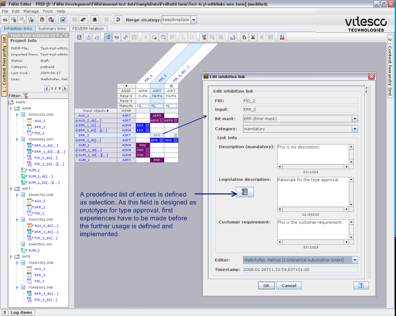
Add a new complex inhibition link
Summary:
Complex links are meant to be links between input and output objects, where at least one object is of the type array.
Example:
You want to assign ERR_test_1[NC_CYL_NR] to FID_test[NC_CYL_NR]
NC_CYL_NR = 4
Objective is to use an algorithm for the link between the arrays in order to be able for reusing this algorithm if the array index will change (e.g. if NC_CYL_NR =6). If you would link single array elements, there is only a limited reuse possible.
Nevertheless it's also possible within the editor to link dedicated array elements without logic.
For a detailed description of the link generation algorithm see LinkLogic.
Workflow:
Choose the tab 'Inhibition matrix' -> choose the needed FARM nodes from the tree view and transfer them to the matrix view -> Navigate to the intersection of ERR/AUX/SUM and FID (link cell), where you want to establish an inhibition link. -> Double click left mouse button -> Choose mask -> Choose category -> Enter description -> Select optinal the legislative description (if available) -> Enter optional the customer requirement -> press Next button -> Specify the link logic by either using a predefined logic pattern or by specifying a dedicated logic -> Press OK button.

Result (arrays have to be expanded in the matrix view):

Add new inhibition link(s) by copy & paste
Copy & paste of a single inhibition link
Workflow:
Navigate to the link you want to copy inside the matrix view -> select the link -> use right mouse context menu and choose copy/cut (alternative CRTL-C, CTRL-X) -> select target links cells via single or multi selection -> choose paste via right mouse click context menu (alternative CRTL-V) -> Confirm merge and adapt if necessary the desciptive parts.
As a result the corresponding link will be copied to the target area. It will be checked , whether a link can be applied or not according to the link type. You cannot paste links of different types, i.e. you cannot paste a simple link cell to a complex link cell.
A complex summary link is defined by it's complex input or/and output and you can only copy&paste complex summary links of the same type, i.e. the complex inputs or/and outputs must have the same number of dimensions and must have the same dimension index.
Example:
Copy link: ERR_test1[NC_CYL_NR] -> FID_test[NC_CYL_NR]
to ERR_test_2[NC_CYL_NR] -> FID_test_a[NC_CBK_EX_NR]
will not work, as the FID's have different array indices.
Navigate to the link you want to copy:

Navigate to the target area (multi selection possible) you want to paste the link

Confirm the descriptive part of the link. The changes will be applied to all pasted links.

Copy & paste of all FID related links
Summary:
In order to copy the complete set of diagnostic links to a FID you can do the copy & paste at the level of the FID in the inhibition matrix view.
Workflow:
Navigate to FID you want to copy inside the matrix view -> select the links by selecting the column -> use right mouse context menu and choose copy/cut (alternative CRTL-C, CTRL-X) -> select target FID columns via single or multi selection -> choose paste via right mouse click context menu (alternative CRTL-V) -> Confirm merge and adapt if necessary the desciptive parts.
As a result all corresponding links will be copied to the target area. It will be checked , whether a link can be applied or not according to the link type. You cannot paste links of different categories, i.e. you cannot paste copied links to a simple FID to a complex FID and vice versa.
If you want to copy&paste the links to complex FID's, the type of the target FID(s) has to be identical to the copied source. Identical means to have the same number of array dimensions and the same array index.
Example: You cannot copy FID_test[NC_CYL_NR] to FID_test_a[NC_CBK_EX_NR], because they have a different array index.
Even if not all
FID links are shown in the matrix view, the result will be that all
related links found in the FARM file, will be pasted to the target
FID.
Step 1: Select FID to be copied, in the example FID_1 was choosen

Step 2: Select target FID(s), wherer the FID_1 links shall be copied to. In the example FID:2 was choosen.
Note, that all existing links will stay except those who will be overwritten by the copied ones.

Copy & paste of ERR-AUX-SUM-related links to FID'S
Summary:
In order to copy all related links from one ERR to all related FID's you can do the copy & paste at the level of the ERR's within inhibition matrix.
Workflow:
Navigate to ERRt you want to copy inside the inhibition matrix view -> select the links by selecting the row -> use right mouse context menu and choose copy/cut (alternative CRTL-C, CTRL-X) -> select target ERR- row(s) via single or multi selection -> choose paste via right mouse click context menu (alternative CRTL-V) -> Confirm merge and adapt if necessary the desciptive parts.
As a result all corresponding links will be copied to the target area. It will be checked, whether a link can be applied or not according to the link type. You cannot paste links of different categories, i.e. you cannot paste copied links from a simple ERR to a complex ERR and vice versa.
If you want to copy&paste the links from complex ERR's, the type of the target ERR(s) has to be identical to the copied source. Identical means to have the same number of array dimensions and the same array index.
Example: You cannot copy ERR_test[NC_CYL_NR] to ERR_test_a[NC_CBK_EX_NR], because they have a different array index.
 Even if not all
summary links are shown in the matrix view, the result will be that
all related links found in the FARM file, will be pasted to the
target ERR.
Even if not all
summary links are shown in the matrix view, the result will be that
all related links found in the FARM file, will be pasted to the
target ERR.
GUI example.

Modify /delete inhibition links
You can modify inhibition links by reopening the inhibition link editor and change the category / mask and/or the descriptive parts. For complex links you can change also the logic.
In order to delete inhibition links you have several possibilities:
You can select single links inside the matix area and the activate 'Delete inhibition links' via right mouse context menue. As a result the links wil be removed from the data model.
You can select a complete row or column to delete the related links. Be aware, that all related links related to the corresponding object (either ERR/AUX/SUM or FID) will be deleted, not only the visible ones !
Complex links (link logic)
Algorithm for definition of complex links
Summary:
Complex links (inhibition and summary links) can be defined if at least one link input or output is defined as an array. The motivation to use complex links is to reduce the number of links to be handled manually and to increase the possibility of re-use of FARM configuration data.
Complex links can be used if the link behaviour can be expressed by a rule. A rule or link logic is defined by the parameters iterator, modulo operator, offset and fix values.
The iterators define the theoretically possible set of array element indices which can be used for link generation.
The modulo and offset parameter reduce this overall set of indices per dimension. All non-redundant permutations of remaining element indices form the resulting set of inhibition links.
The most simple example for a rule based link behaviour is a ERRM object DEMa which shall inhibit processing all functions FIDb[NC_CYL_NR] related to the cylinders (assuming NC_CYL_NR = 4). If no link logic is used, all functions FIDb[0], FIDb[1], FIDb[2], FIDb[3] have to be inhibited explicitely. If the FARM configuration data is re-used for e.g. an follower project with an 6 cylinder engine all links with impact to the number of cylinders have to be reworked in order to gain the same function inhibition behaviour. Using a link logic will provide the desired behaviour implicitly (when NC_CYL_NR changes from value 4 to 6).
Link algorithm operator : Iterators
The iterator enables the user to define the possible set of array indices which could be used for link generation between array elements in the link logic itself. The resulting set of indices depends on the iterator start value (default : 0), its end value (usually: size of the array dimension the iterator shall be used for) and the iterator step (default : 1). Using other values for the start and the increment as the default reduces already the possible set of available indices. A start value of 1 and an increment of 2 e.g. creates an iterator having odd values only.
Defining a iterator with the parameters Start = 0, End = NC_CYL_NR, Step 1 will result in a set S of indices of [0,1,2,3].
Note: index counting starts with zero, therefore the End parameter has to be interpreted as End value excluded ( End (-1) ).
The number of iterators to be defined depends on the desired link behaviour. Usage of an iterator in more than one array dimension defines a correlation between this two dimensions. If between all input and output elements a link shall be setup an own iterator has to be defined for each dimension.
As iterators are referenced in the link logic each iterator owns an unique name.
Link algorithm operator : Modulo operator
Modulo operators are defined per dimension. The modulo operation reduces the number of applicable indices for link generation between the array elements. An implicite modulo operation on dimension sizes is done in order to prevent array index border violations. If no explicite modulo operation shall be used the editor offers the value "no mod op".
Link algorithm operator : Offset operator
The offset operator introduces an offset value to the set of possible array indices additionally. If array index boundaries are violated due to offset values, the resulting possible array indices are limited by the implicity modulo operation described before. If no offset operation shall be performed, the offset value has to remain 0.
Sequence of calculation
For each dimension the set of possible indices derived from its references iterator is take, the explicite modulo operation is performed, the offset operation is performed and finally the result is limited by the implicite modulo operation of the dimension size.
Mathematical definition
A complex link rule consists of:
|
A set of # i used iterators I = {I0, ..., I#i-1}, each iterator with |
||
|
|
- A starting value Iistart |
(user defined) |
|
|
- increment value Iiinc |
(user defined) |
|
|
- A maximum value Iimax |
(user defined) |
|
A transfer function Td(s) for each array dimension d from the iterator state to the array index of input and/or output arrays depending on an iterator state s |
||
|
|
- Reference Tditer to an Iterator Ii of set I |
(user defined) |
|
|
- A modulo value Tdmod |
(user defined) |
|
|
- An offset Tdoffset |
(user defined) |
|
|
- An implicit modulo to the size of the dimension d size in which this transfer function is used |
(calculated by editor) |
|
|
- Alternatively, a constant value |
(user defined) |
The resulting links are calculated in the following way by the link logic editor:
Step 1: Generation of possible array element indices by defining iterator sets
Calculate a set of states S = {S0, ..., SJ} for the relevant iterators Î: Each state Sj contains one integer value si corresponding to each iterator Ii.
S0 is a list of initializers, one corresponding to each iterator: S0 = {s0 = I0 start, ...., si = Ii start}
Si+1 is calculated from Si: Starting at k=0 sk is incremented by Ik inc. If it reaches or exceeds Ikmax it reset to Ik start and incrementing is continued with k+1 (and all k and k-1). If the last si overflows, the set S is complete.
|
Example: |
Two iterators I0 and I1 defined with following parameters |
|
|
|
|
|
I0 = {start = 0, inc = 1, max = 2} |
|
|
I1 = {start = 0, inc = 1, max = 4} |
|
|
This results in the following set of iterator states (array element index combinations) |
||||||||||||
|
|
|
||||||||||||
|
|
|
|
I0 |
|
I1 |
|
|
|
|
|
|
|
|
|
|
S0 |
{ |
0 |
; |
0 |
} |
|
|
|
|
|
|
|
|
|
S1 |
{ |
0 |
; |
1 |
} |
|
|
|
|
|
|
|
|
|
S2 |
{ |
0 |
; |
2 |
} |
|
|
|
|
|
|
|
|
|
S3 |
{ |
0 |
; |
3 |
} |
|
|
|
|
|
|
|
|
|
S4 |
{ |
1 |
; |
0 |
} |
|
|
|
|
|
|
|
|
|
S5 |
{ |
1 |
; |
1 |
} |
|
|
|
|
|
|
|
|
|
S6 |
{ |
1 |
; |
2 |
} |
|
|
|
|
|
|
|
|
|
S7 |
{ |
1 |
; |
3 |
} |
|
|
|
|
|
|
|
Step 2:
For each element of S one atomic link element is created by using the transfer function Td of each dimension d of inputs and outputs:
Td(sd) = ((sd mod (Td mod)) + Td offset) mod (d size)
These values T for each dimension are defining the atomic link elements between the array elements.
Step 3:
Redundant links between
array elements are removed.
Example A
Definition of desired inhibition link behaviour
Assuming a project with an 6 cylinder (two banks) engine with 6 functions FIDb[NC_CYL_NR] to be inhibited in case of an sensor error. The corresponding input object is a sensor diagnosis status DEMa[NC_BANK_NR]. The corresponding error information is retrieved by the inhibition mask ERR.
The desired inhibition link behaviour is (verbal definition):
Inhibit all odd function elements of FIDb based on the ERR object status of the left engine bank (DEMa[0]). Inhibit all even function elements of FIDb based on the ERR object status of the right engine bank (DEMa[1]).
The desired inhibition link behaviour is (explicite array link definition):
|
Right engine bank |
|
Left engine bank |
||||||||
|
|
|
|
|
|
|
|
|
|
|
|
|
DEMa[ 1 ] |
ð |
ERR |
ð |
FIDb[ 0 ] |
|
DEMa[ 0 ] |
ð |
ERR |
ð |
FIDb[ 1 ] |
|
DEMa[ 1 ] |
ð |
ERR |
ð |
FIDb[ 2 ] |
|
DEMa[ 0 ] |
ð |
ERR |
ð |
FIDb[ 3 ] |
|
DEMa[ 1 ] |
ð |
ERR |
ð |
FIDb[ 4 ] |
|
DEMa[ 0 ] |
ð |
ERR |
ð |
FIDb[ 5 ] |
Dimension sizes : NC_CYL_NR = 6, NC_BANK_NR = 2
Definition of link logic and its parameters
Step 1: As there is a dependency between the dimension x of DEMa and dimension x of FIDb, only one iterator has to be defined by the user.
Iterator ICYL over all cylinders with Start = 0, End = NC_CYL_NR and Step = 1 results in ICYL = {0,1,2,3,4,5}
This results in the following set of possible array element indices:
|
|
|
ICyl |
|
|
S0 |
{ |
0 |
} |
|
S1 |
{ |
1 |
} |
|
S2 |
{ |
2 |
} |
|
S3 |
{ |
3 |
} |
|
S4 |
{ |
4 |
} |
|
S5 |
{ |
5 |
} |
Step 2:
Assignment of the iterator for each dimension to be used by the
user. In this example the iterator is the same for both dimensions.
Without any further limitation of resulting array indices the list
of resulting input and output indices is
|
DEMa |
[0] |
ð |
FIDb |
[ 0 ] |
|
DEMa |
[1] |
ð |
FIDb |
[ 1 ] |
|
DEMa |
[2] |
ð |
FIDb |
[ 2 ] |
|
DEMa |
[3] |
ð |
FIDb |
[ 3 ] |
|
DEMa |
[4] |
ð |
FIDb |
[ 4 ] |
|
DEMa |
[5] |
ð |
FIDb |
[ 5 ] |
Note: Even if the input dimension can not contain an index > 1 in this example, the table show all possible indices resulting from the selected iterator.
Step 3: Applying the modulo operation on the dimension of the link input, the left and right cylinder bank could be calculated. The modulo value in this case is 2. The modulo operation is done in this case either by applying explicitely the modulo 2 or using the implicite modulo derived from the dimension size of the array. Additionally a offset value of 1 is applied.
MOD 2
OFFSET 1
ê
|
DEMa |
[1] |
|
FIDb |
[ 0 ] |
|
|
DEMa |
[0] |
|
FIDb |
[ 0 ] |
|
DEMa |
[2] |
|
FIDb |
[ 1 ] |
|
|
DEMa |
[1] |
|
FIDb |
[ 1 ] |
|
DEMa |
[3] |
|
FIDb |
[ 2 ] |
ð |
DEMa |
[0] |
|
FIDb |
[ 2 ] |
|
|
DEMa |
[4] |
|
FIDb |
[ 3 ] |
DEMa |
[1] |
|
FIDb |
[ 3 ] |
||
|
DEMa |
[5] |
|
FIDb |
[ 4 ] |
|
|
DEMa |
[0] |
|
FIDb |
[ 4 ] |
|
DEMa |
[6] |
|
FIDb |
[ 5 ] |
|
|
DEMa |
[1] |
|
FIDb |
[ 5 ] |
Predefined link logic patterns
In most of the use cases predefined logic pattern will be used. They are provided by the editor in order to ease the definition of the logic. For all other use cases individual logic definition is necessary. It is also possible to first use a logic pattern and then modify the logic. The logic patterns can be applied for all complex links for inhibition links, summary links or for the relationship between ERR's and FID's.Logic pattern 1:1
This logic pattern can be used, if the dimension index of input and output are identical. As a result each array index of the input is inhibiting the corresponding array index of the output.
Example (NC_CYL_NR=4): ERR_1[NC_CYL_NR] -> FID_1[NC_CYL_NR] using mask ERR, logic pattern: 1:1
| FID_1[0] | FID_1[1] | FID_1[2] | FID_1[3] | |
| ERR_1[0] | ERR | |||
| ERR_1[1] | ERR | |||
| ERR_1[2] | ERR | |||
| ERR_1[3] | ERR |
Logic pattern N:M
This logic pattern will link any dimension index of the input with any dimension index of the output, so all possible inhibitions are created.
Example (NC_CYL_NR=4):
ERR_1[NC_CYL_NR] -> FID_1[NC_CYL_NR] using mask ERR, logic pattern: N:M
| FID_1[0] | FID_1[1] | FID_1[2] | FID_1[3] | |
| ERR_1[0] | ERR | ERR | ERR | ERR |
| ERR_1[1] | ERR | ERR | ERR | ERR |
| ERR_1[2] | ERR | ERR | ERR | ERR |
| ERR_1[3] | ERR | ERR | ERR | ERR |
Logic pattern N:1
This logic pattern will link any dimension index of the input with the scalar output.
Example (NC_CYL_NR=4):
ERR_1[NC_CYL_NR] -> FID_1 using mask ERR, logic pattern: N:1
| FID_1 | ----- | ----- | ----- | |
| ERR_1[0] | ERR | |||
| ERR_1[1] | ERR | |||
| ERR_1[2] | ERR | |||
| ERR_1[3] | ERR |
Logic pattern 1:M
This logic pattern will link the scalar input with any dimension index of the output.
Example (NC_CYL_NR=4):
ERR_1[NC_CYL_NR] -> FID_1[NC_CYL_NR] using mask ERR, logic pattern: 1:M
| FID_1[0] | FID_1[1] | FID_1[2] | FID_1[3] | |
| ERR_1 | ERR | ERR | ERR | ERR |
| ---- | ||||
| ---- | ||||
| ---- |
Examples for the use of modulo / offset
Use of modulo
ERR_1[NC_CYL_NR]
Iterator; i1, 0...3
Modulo: no modulo operation
Offset: 0
FID_1[NC_CYL_NR]
Iterator; i1, 0...3
Modulo: 2
Offset: 0
Result:
|
Input\Output |
FID_1[0] |
FID_1[1] |
FID_1[2] |
FID_1[3] |
|
ERR_1[0] |
x |
|
|
|
|
ERR_1[1] |
|
x |
|
|
|
ERR_1[2] |
x |
|
|
|
|
ERR_1[3] |
|
x |
|
|
This logic is usfull for the mapping of a cylinder dependency to a bank dependency.
Use of Offset:
ERR_1[NC_CYL_NR]
Iterator; i1, 0...3
Modulo: no modulo operation
Offset: 0
FID_1[NC_CYL_NR]
Iterator; i1, 0...3
Modulo: 0
Offset: 1
Result:
|
Input\Output |
FID_1[0] |
FID_1[1] |
FID_1[2] |
FID_1[3] |
|
ERR_1[0] |
|
x |
|
|
|
ERR_1[1] |
|
|
x |
|
|
ERR_1[2] |
|
|
|
x |
|
ERR_1[3] |
x |
|
|
|
Work with 2 FARM files (merge, copy&paste, compare)
Summary:
In order to compare & merge
FARM data from
a secondary to a primary FARM data source, there's a possibility to
load a primary and a secondary FARM file. You can view both
summary links / inhibition links within a spreadsheet view and you
have several possibilities to merge data.
Be aware that
the
secondary FARM file is only used as read only file for compare
actions and merge actions from the secondary file to the primary
file. There are no operations to modify the secondary FARM file and
also no operations to save the secondary FARM file.
Merge will
perform the following acitons:
- Add new objects / links, if not yet existing in the primary FARM file
- Keep identical objects ( FID / ERR / AUX / SUM / masks / persons / name mapping) inside the primary FARM file
- Overwrite identical summary links or inhibition links within primary FARM file
-
Keep objects/link inside the primary FARM file, which are not
affected by the merge.
Load 2nd FARM file
Summary:
The secondary file can be loaded either from the file system using the corresponding menu commands or the icons. The secondary FARM file is also checked at the loading stage for consistency (schema, checksum). The tree view representation of the secondary FARM file is on the right hand side ot the FARM GUI panel. The panel will open automatically, when the 2nd file is loaded.
A 2nd FARM file can only be loaded after a primary FARM file is loaded.
Close 2nd FARM file
The 2nd FARM file can be closed on user demand by using the command File -> Close 2nd FARM file. The close command is only active, if a 2nd FARM file is loaded.
Synchroneous drag&drop mode
Summary:
In order to fill the inhibition matrix or summary link view, there are two possibilities provided, a synchroneous mode and an asynchroneous mode. The synchroneous mode uses FARM objects with identical naming/context from the primary and secondary FARM file in order to fill the spreadsheet view, the asynchroneous uses only the selected objects from one FARM file.
If only one FARM
file is loaded, the synchroneous and asynchroneous mode will have
the same effect.
Workflow:
Select the synchroneus mode using the
corresponding icon (toggle mode): 
Note that
synchroneous and asynchroneous mode can be controled seperately for
the inhibition matrix view and the summary link view.
Navigate to the FARM object you want to drag to the matrix view either in the primary or secondary tree .
Drag the selected object(s) to the matrix view. The following result is provided depending on the object selected:
If the root
node (FARM) is selected all objects form the primary and secondary
FARM file are draged to the matrix view.
If a context node
is selected (either aggregate node or spec node), the corresponding
context node is searched for in the other tree and all assigned
FARM objects (FID/ERR/AUX/SUM) are draged to the matrix view taking
into account the drag&drop logic (input or outpunt
oriented).
For the spec search the following algorithm is applied: Spec nodes
are identical if the follwoing name pattern inside the
specification name (8.3 naming convention fromLIMAS) is
identical:
12345678.abc
is idendified as
identical,if the characters at the postions 3,5,6
are
identical
If dedicated FARM
objects are selected (FID/ERR/AUX/SUM) the corresponding objects
with the same name are searched for in the other FARM file (never
mind, to which context node they are assigned) and draged to
the matrix view according to the selected drag&drop logic.
Therfore the result of draging context nodes or dedicated FARM objects to the matrix view may be different depending on the assignment of FARM objects to the context node in the primary and secondary FARM file.
The matrix view can be either completely cleaned, selected columns/rows can be cleaned or dedicated cells. The correponding opeations are equal to the operations when working with one FARM file only.
Basic view for synchroneous mode, the context node AIRT was used to fill the matrix view:

Asynchronous drag&drop mode
Summary:
In order to fill the inhibition matrix or summary link view, there are two possibilities provided, a synchroneous mode and an asynchroneous mode. The synchroneous mode uses FARM objects with identical naming/context from the primary and secondary FARM file in order to fill the spreadsheet view, the asynchroneous uses only the selected objects from one FARM file.
Workflow:
Select the asynchroneus mode using
the
corresponding icon (toggle mode): 
Note that
synchroneous and asynchroneous mode can be controled seperately for
the inhibition matrix view and the summary link view.
Navigate to the FARM object you want to drag to the matrix view either in the primary or secondary tree .
Drag&drop the selected object(s) to the matrix view. As result only the selected objects will be added to the matrix view
Basic view for aynchroneous mode, the context node AIRT in the secondary FARM data file was used to fill the matrix view.:

Merge data from 2nd to 1st FARM file
Summary:
In order to merge FARM data from the secondary FARM file to the primary FARM file several merge functionalities are provided.
The user can control the granularity of merge actions from the complete file to a single inhibition link or summary link.
Merge objects using the merge panel
Summary:
In order to control a complete set of merge actions, the merge panel shall be choosen either by <CRTL> M or by the Manage -> Merge FARM objects menu.
The following merge operaions are supported:
- FARM ECU setting: All data of the FIM general panel, which can be modified by the end user will be copied from the secondary FARM file to the primary FARM file.
- Name-mapping: The name mapping of ERR array element names will be merged to the primary one. New name mappings will be added, existing ones will be kept.
- Persons:
Persons are referenced inside
a file to track the information e.g. changed summary or inhibition
links. To merge persons means to add new persons, which are not
existing withint the primary FARM file. Existing or identical
persons will be kept in the primary FARM file.
Persons are merged automatically be merging links, as any links have references to person for the last change. - Bit masks:
Masks can be merged seperately
from the secondary to the primary FARM data file. Existing and
identical masks in the primary file will be kept. New masks will be
added.
If the acronym is identical, but the binary definition and/or the name is different, then the maks will be kept in the primary FARM file and a warning reported at the log items. - Objects: All
manual added objects like
FID's, ERR's, AUX's and also SUM's can be merged from the secondary
to the primary data file.
New 'manual objects' will be added, existing or identical manual objects will be kept,
No operation on ADD extracted objects is possible. They cannot be changed. - Links:
Inhibition links, summary links
and FID-ERR relations can be merged in total from the secondary to the
primary data file.
The link logic is dependant on the setting for the objects:
If no manual objects shall be merged, also no links related to those objects will be merged. There is no automatic adding of manual objects.
Links will only be merged to the primary data file, if the input-output relationship of a link can be established at the primary FARM file. Missing masks will be added automatically as well as missing persons.
GUI for selecting the merge operations. Multi selection is possible. For post build files, a reduced set of merge operations is offered.
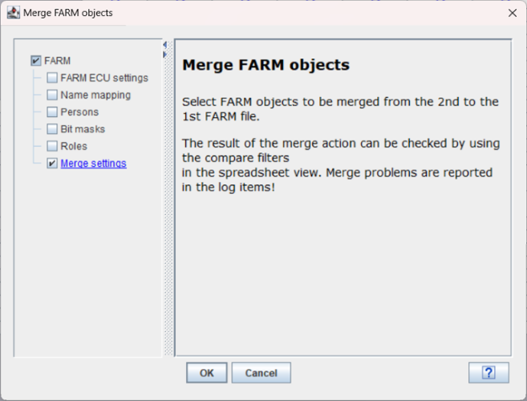
Merge objects using tree view
Summary:
In order to merge a complete set of links related to a context node the merge can be done at the level of the context node. This mode shall be used for merging aggregate specific or specification specific links to a project.
If a context node is choosen for merging objects the following actions are performed for all FARM objects inside the context node:
1) Add manual FID's, ERR's, AUX's, if necessary
2) Add SUM's, if necessary
3)
Merge all FID
related links to ERR's, AUX's, SUM's including adding missing
masks/persons/manual ERR's, manual AUX's, SUM's.
 If a FID is linked to
a SUM object in a different contect node, only the link to the SUM
will be set, but the links of the SUM related links to ERR's are
not merged, as the SUM object does not belong to the context
node.
If a FID is linked to
a SUM object in a different contect node, only the link to the SUM
will be set, but the links of the SUM related links to ERR's are
not merged, as the SUM object does not belong to the context
node.
4) Merge all ERR related inks to FID's and SUM's including adding missing masks/persons/manual FID's, SUM's.
5) Merge all SUM related links to ERR's
For any merge of inhibition links the corresponding masks or persons are added, if not present in the primary FARM data file.
In order to merge all links related to one FARM object (FID, ERR, AUX, SUM), the merge can be done at the level of single FARM objects inside the tree view of the secondary FARM file.
Merge operation for an aggregate
context node:
AIRM.
Select context node within secondary tree and either drag&drop
it to the primary tree of use the right mouse context menu and
select Merge FARM Object. Note, that within this example the
primary FARM file has no links at all.

Result of the merge opertion:

Merge objects using matrix view (e.g. FID's)
Summary:
Within the matrix view (either inhibition matrix or summary links) the end user can select single links or complete rows/columns to initiate a merge operation.
In contrast to the merge operations for a single object (e.g. FID) inside the tree view, a merge operation on a complete row/column inside the matrix view will create no new objects (FID / ERR / AUX / SUM), but will only add and replace links where the input and output objects are existing.
Merging single links:


Merging FID related links:


In all ERR related links shall be merged from the secondary to the primary FARM file, the corresponding functionality from the tree view shall be used.
A merge for a complete row is possible (row a to row b/c..) inside the matrix view.
Compare 2 FARM files
Summary:
In order to analyse the differences of 2 FARM files the following featues are provided:
Spreadsheet view filters in order to display link differences for the 2 FARM files at logic and binary level. THe corresponding difference view can be exported to pdf . See SpreadheetFilter.
Difference report funcitonality for 2 FARM files independent of the spreadsheet view. See DiffReport.
Processing FARM exchange files
Summary:
In order to support the cooperation with development partners, which do not use the FARM tool chain, a simple exchange format was developed.
The corresponding files can be written and read by the FARM editor.
See below a possible scenario using the FARM exchange format:


Details of the exchange format:
The exchange format is a simple XML schema in order to transport the following FARM information:
- FID's – name, description, category (scalar / array-definition / array element)
- ERR's - name, description, category (scalar / array-definition / array element)
- AUX's - name, description, category (scalar / array-definition / array element)
- SUM's - name, description, category (scalar / array-definition / array element)
- Masks – Acronym, description
- Inhibition matrix – input name, output name, mask, category (mandatory / optional), logic-pattern (in case of array definitions)
- Summary links - – input name, output name, category (mandatory / optional), logic-pattern (in case of array definitions)
No context
information can be stored inside the FARM exchange file.
Export FARM exchange files
Summary:
In order to export a FARM file in the corresponding exchange format use the Tools menu. As a result the corresponding FARM data will be written to the file according to the defined XML schema..
Workflow:
Load a primary FARM file -> Modify the file according to the needs -> Export FARM data as FARM xml exchange file using:
Tools -> Export FARM-exchange file -> Specify the intended file name -> Press OK.
Import FARM exchange files
Summary:
In order to import FARM data from another data source the import of the FARM exchange data format is supported. For the import the basic context structure of the primary FARM file is used to initialize the secondary FARM data source. The data from the FARM exchange file are then loaded into the secondary FARM data source. After the import the data can be merged on demand from the secondary FARM data source to the primary FARM file.
For the import the following attributes have to be defined:
- Person, which will be used as reference for the inhibition links and summary links
- Category of import
·
All data: Used for the initial
migration of FARM data, e.g. for initial FARM data migration. All new
FARM
objects , which are not present in in the primary FARM file, but
found inside the exchange file wil be added to the secondary FARM
data source as manual defined objects.
All newly added FARM objects will be added to the top level FARM
context node, as there is no context information inside the FARM
exchange file.
No new masks will be added, as consequence all links using a
undefined mask will be skipped.
· Prebuild – No new objects will be accepted.
· Postbuild – No change of existing mandatory links will be accepted, no new mandatory links will be accepted
Several checks will be done at the import stage of a FARM exchange file. Find below the most important ones:
- Check, whether a logic pattern is specified, if complex FARM objects are linked. If no logic pattern is defined, no link will be generated.
- Check, whether inputs or outputs are of the right type, e.g. an array element cannot be linked to an array.
- Check, whether masks are already defined within the primary FARM data file. If not the link will not be generated
- Check, whether the mask type is correct (AUX/ERR mask types). If the mask type is wrong, the link will not be generated.
In all cases corresponding log entries will be written.
Workflow:
Load a primary FARM file, which will be used as basis for the import -> Choose menu item Tools -> choose 'Import FARM exchange file to 2nd FARM data source' -> Choose the file to be imported -> choose category of import (All data / Pre-Build / Post-build) -> Select a preson to be used for refereces at the summary and inhibition links -> Press OK -> The result of the import will be shown in the secondary FARM tree -> Use the merge operation in order to merge imported data to the primary FARM file.

Load OBD information for ERR's
Summary:
In order to load the information, whether the diagnostic input objects (ERR's) are OBD relevant or not , a calibration file can be loaded. The supported calibration file formats are: dcm, cdf v2.0
The information on the OBD relevance is visible in the edit panels of diagnostic objects and within the matrix views as seperated column.
For calculation of the OBD relevance of summary objects the following algorithm is implemented:
Example with three ERR's linked to the SUM_1
|
SUM_1 |
ERR_1 |
ERR_2 |
ERR_3 |
|
|
OBD relevant |
OBD relevant |
OBD relevant |
OBD relevant |
All ERR's must be OBD relevant |
|
Not OBD relevant |
OBD relevant |
Not OBD relevant |
OBD relevant |
At minimum one ERR must be not OBD relevant, but no ERR must have 'no information' |
|
No information |
OBD relevant |
Not OBD relevant |
No information |
At least one element must have 'no information' |
Workflow:
Load primary FARM file with links inside -> Tools – Import OBD info from calibration data.
You can select the corresponding calibration data file from the file system and choose whether the OBD information will be reset (checkbox activated) or loaded in addition to the existing one.
In case of a successful import a corresponding message panel will be displayed. In case there are errors detected, also the corresponding error messages are displayed.
The following labels must be exported to dcm or cdf v2.0 in order to generate a valid calibration data file with OBD information:
- C_ERR_CLAS(symptom name)
- ID_ERR_CLAS_A_FMT
Load OBD info panel:

OBD info shown after the load stage:

Print FARM data via Word
Summary:
The print functionality is provided by opening the FARM data in Word. The FARM document can be printed using the Word functionality. This document is part of the Vitesco documentation provided for each delivery. The document contains all summary and inhibition links. The complex link definitions are not reported but only the generated links.
Three template styles are supported:
- LIMAS module - no header and footer, to be used for the LIMAS import
- Pretty draft - header and footer, draft on every page
- LIIMAS preview - Final print out including header and footer
Workflow:
Load primary FARM file -> Use Word icon or use Tools menu -> Choose the template style -> Correct / fill the corresponding fields inside the panel -> press OK -> Word will automatically open after the document is generated. Depending on the size of the FARM file the generation process may last some seconds.
The description as specificed inside this panel will be also shown in the FARM document.

As a result the FARM documentation will look like the following style:
Word should be opened automatically after the generation process is finished.

Export binary data for ECU flashing (e.g. s19)
Summary:
The FARM editor supports the generation of a new executable file for flashing to the ECU based on a post-build FARM file.
There are 3 options for generating the binaray data:
- Generate
an updated HEX file. In order to generate a HEX file with updated FARM
data an already existing HEX file fitting to the current FARM
data
must be referenced.
There will be a corresponding check while reading the referenced HEX file. Flashing can be done using a calibration tool like INCA. - Generate a chm file for the relevant FARM labels only (Merge & flash with e.g. INCA)
- Generate a cdfx file for the relevant FARM labels only (Merge & flash with e.g. INCA)
Workflow:
Load primary post-build FARM file to be changed -> Choose Tools-Export HEX file -> Select the input HEX file -> Specifiy the name of the newly generated HEX file -> Press button Export.
As
the overall
checksum of the FARM inhibition is updated at the export stage
within the primary loaded FARM file, it is recommended to store the
primary FARM file after the HEX export in order keep a FARM file,
which has an identical content in comparison to the corresponding
HEX file.
The generated HEX / dcm / cdfx file can be now used for flashing to the ECU.

In case the
FARM
memory is mapped to the ECU code section, a post processing of the
HEX file is necessary in order to update checksums (ckscalc).
Import HEX file (e.g. s19)
Summary:
The FARM editor supports to read the binary FARM information from an existing HEX file based on a reference FARM file (either 1st FARM file or a dedicated one) into the secondary FARM data source.
Workflow:
Load primary FARM file fitting to the HEX file, which shall be imported -> Choose Tools-Import binary FARM data from HEX file -> Select FARM file as basis, either use already loaded primary FARM file or select a dedicated FARM file from the file system -> Select the HEX file to be imported -> Press Import button.
The imported FARM data from the HEX
file will
be shown in the secondary FARM tree.
Note that the
import will work on the binary information of the HEX file and
therefore are complex logic links are lost and will be shown as
manual links.
As
the
information on the category of links is also not present, all links
will get the category 'optional'.
Also all summary
objects cannot be resolved any more, therefore they will get new
names SUM_1...n. The comparison to the summary objects within the
primary FARM file has to be done manually.
Result of an logic compare between both FARM data sources:

In order to compare the binary links inside the imported HEX file and the primary FARM file, the binary compare filter mode can be used, which does not analyze the complex link definition and the link category (optional/mandatory). The HEX compare mode also does not report a difference, if an array link is generated or manual.

I
The
Hex compare will still report differences of the summary objects /
links, as the summary object names cannot be resolved at the binary
import stage.In order to get the issue solved, the 'Resolve summary link view' can be activated and as a result no differences will be reported any more.
FARM checker
Summary:
The FARM checker can be used on demand in order to check the primary FARM file for the following rules:
|
Rule |
Meaning |
|
100 |
Check for the integrity of references |
|
111 |
Check for duplicate ID's |
|
150 |
Check for missing references (identifiable object is not referenced) |
|
160 |
Check for schema version compatibility |
|
161 |
Check for project information |
|
162 |
Check for System baseline information |
|
163 |
Check for System baseline ID (LIMAS) |
|
164 |
Check for file name inside FARM file |
|
170 |
Check for validity of persons inside the FARM file |
|
200 |
Check for validity of names of input / output objects. Names must be unique match a defined format not surpass the maximum length |
|
210 |
Check for the description of an input / output object |
|
300 |
Check for maximal number of linked objects per FID |
|
310 |
Check for maximal number of linked FID's to one object |
|
320 |
Check for maximal number of summary objects |
|
330 |
Check for maximal number of summary links |
|
340 |
Check for the maximal number of inhibition links |
|
350 |
Check for the maximal number of total links (summary links and inhibition links) |
|
360 |
Check for the maximal number of masks |
|
400 |
Check for name uniquness for masks |
|
410 |
Check for acronym uniqueness of masks |
|
420 |
Check for validity of mask bit definition |
|
430 |
Check consistency of mask types used in links (AUX mask versus ERR masks) |
|
500 |
Check of valid values for FIM general settings |
|
510 |
Check for specific FIM settings – FIM specific general section |
|
520 |
Check for specific FIM settings – FIM specific display section |
|
530 |
Check for specific FIM settings – Common bublished information section |
|
600 |
Check for the the validity of the name mapping information |
The FARM checker will run automatically when saving a FARM file as 'valid'. As long as errors are detected, that file cannot be save as 'valid'.
Workflow:
File -> FARM Checker -> Run Checker
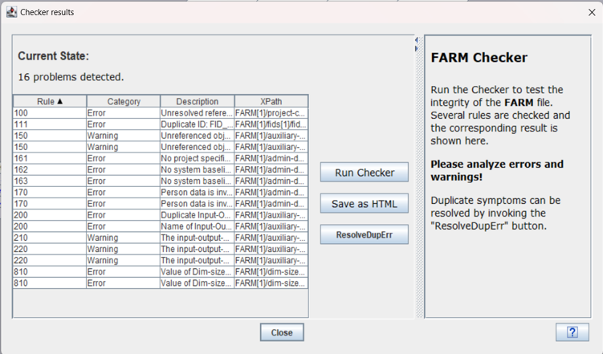
All found problems will be listed in the the result table. They can be exported using the 'Save as HTML' button.
Any reported
error shall be analyzed and corrected.
General purpose features
Edit persons
Summary:In order to manage the information about persons referenced at several items inside the FARM file, there is a functionality built in to add new persons or to modify existing persons. It's not allowed to delete persons, as unresolved references could be a consequence.
The person, who edits the FARM file, is automatically added to the set of persons inside the FARM file.The information is either taken from the network environment (Vitesco internal use case) or from the PC environment (OEM use case or offline use case).
Persons are referenced at the following information
- Change history
- FID responsibility
- Link author (inhibition link, summary link, FID-ERR relationship)
For admin reasons it might be necessary to add persons in order to assign them to FID's as responsible. The functionality is provided for pre- and post-build files.
Workflow: Edit -> Edit persons
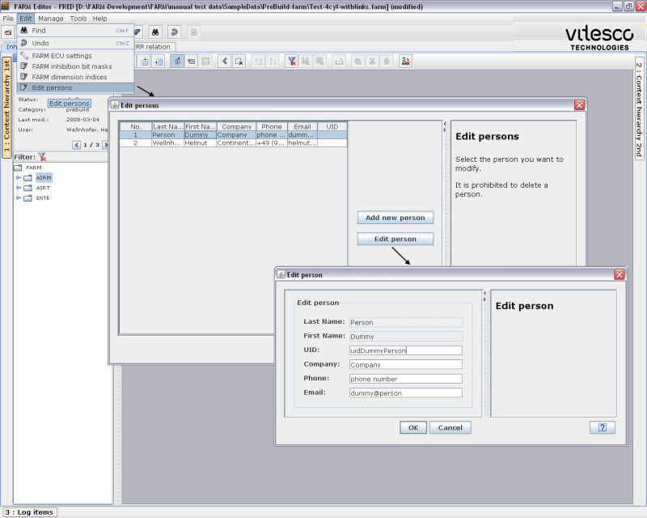
Add / edit / view array dimension index
Summary:For admin reasons it might be necessary to add a new dimension index or change a manual generated dimension index for the use inside an array definition.
This should be an exceptional use case.
It is not possible do change a dimension index, which was exported from the ADD database.
The modification of an array index is only possible at pre-build stage.

Clean primary FARM data source
Summary:
In order to delete complete data packages from the primary FARM data source a Clean functionality is provided. The clean functionality provides dedicated clean features for pre-build and post-build.
Pre-build clean fetaures provided within Manage -> Clean FARM Objects panel:
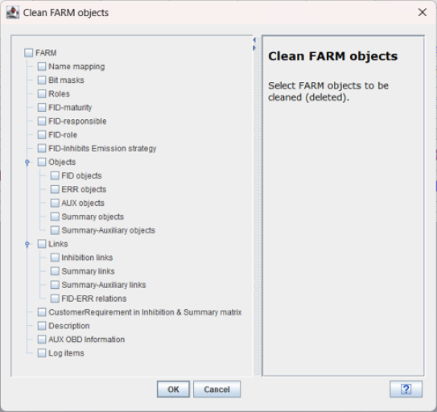
Deleting mask
will automatically remove all inhibition links.
Deleting Objects
will automatically removed all related links.
At the post-build stage reduced clean features will be provided within the corresponding panel, as e.g. no objects can be deleted any more.
Deleting Summary
objects at post build will only delete those summary objects, which are
not used
within mandatory links (either inhibition or summary links)
Search
Summary:
The search functionality will find all defined string matches inside the following GUI components:
- Primary tree (Hierarchy)
- Secondary tree (Hierarchy)
- Matrix view (inhibition matrix, summary links, FID-ERR relationship)
- Log items
The search functionality works on filtered results within the components.
Example:If the filter for displaying only FID objects is activated within the tree view component, no FID object will be found by the search component.
The search functionality is either
activated by Edit->Find or by using the corresponding icon .
If an object is selected in the tree view or spreadsheet view (selection of one row or column) the corresponding name of the object is used for the search panel, if the search is activated after doing the selection.
The search functionality allows the use of *, ? and is not case sensitive.
The search result is displayed in a table which can be sorted alphabetically.
If a match within the search panel is selected, the corresponding position within the FRED component is highlighted.
A multi-select of search matches is possible and will activate a corresponding multi selection within the corresponding panel.
This feature might be used to fill the grid view with a set of FID's following a specific naming convention.
Workflow:
Activate search->
Example for the search result:

Create pdf for the spreadsheet view
Summary:In order to create an export of the spreadsheet view, a functionality is provided to create an intermediate format including preview for the spreadsheet view with the possibility to generate a corresponding pdf.
As the generation process is
memory consuming, it may happen, that the
spreadsheet view can't be generated for very large tables. In most
cases there is a warning for the end user. If the generation process is
continued, it may happen, that the application crashed due to memory
problems. In that case all FARM data changes are lost ! Therefor it is
strongly recommended to store the FARM file changes before activating
the pdf generation process for big spreadsheet views.Workflow:
Use FRED features in order to build the desired spreadsheet view -> Use
As a result an intermediate format and view will be generated. The corresponding panel offers a possibility to zoom in/out and to move to the corresponding spreadsheet position.
The panel offers a possibility to create a pdf file via the corresponding icon

If the pdf generation is activated several options can be selected in order to optimize the output for viewing / printing purposes:
If
the pdf has to be printed on a black&white printer the
corresponding option shall be checked in order to get a good print
result.As a result the pdf will be stored at the PC and the corresponding viewer (Acrobat Reader) will be launched.

Create a difference report between 2 FARM files
Summary:In order to quickly identify changes between 2 FARM files a difference report functionality is provided via main menu icon bar or via the Tools->Diff menu.
The corresponding functionality will report differences for the following information objects inside the FARM file:
FARM masks
Differences on the acronym on on the bit mask will be displayed
FARM array dimension index
Differences on the index value wil be displayed
FARM objects:
It will be reported, whether the FARM objects exist in both FARM files and if they exist, whether there is a difference in the basic definition (e.g. name)
- FID-objects
- ERR-objects
- AUX-objects
- SUM-objects
FARM links:
It will be reported, whether the links exist in both FARM files and if they exist, whether there is a difference in the definition (e.g. description, legislative description, Customer requirement).
Details
on the logic definition of complex links will not be reported. If there
are differences in the logic and as consequence in the generated array
links, an entry in the diff report will appear showing the complex link
definition, but not details about it. In order to analyze the details,
you have to use the editor.
- Inhibition links
- Summary links
After the selection of the change direction (1>>>2 or 1<<<2) a preview panel will display roughly the differences. A HTML report can be generated on demand.
The preview panel is empty, if no differences are detected.
For the example below the meaning is, that the inhibition mask with acronym XXXX is removed in the 2nd FARM file in comarison to the 1st FARM file.
The inhibition link from the auxiliary object AUX_1 to FID_1 using the mask AERR was added in the 2nd FARM file in comparison to the 1st FARM file.

Undo
Summary:For any user initiated action, which could lead to a change of the FARM file an undo is possible.
The undo functionality is recording a compressed FARM data snapshots at each time, the FARM data change or are supposed to change (e.g. for general merge/delete actions). Therefore the number of FARM undo actions is restricted to the maximum of the FARM undo buffer.
Depending
on the user defined view especially within the spreadsheet, it may
happen, that the view is cleared after the undo, as it is complex to
restore the view after the undo. The undo is provided within the Edit
main menu or via the corresponding icon in the main menu bar.Log items
Summary:
Log items are written to the FARM file especially to document errors and warnings.
The corresponding log items for the primary and secondary FARM file are shown at a specific table panel at the bottom of the main GUI. The log item panel can be resized / collapsed / expanded.
For all copy & merge operations log items are written. Each merge action is recorded according the the log item class (information, warning, error).
Within the log item panel you can sort alphabetically for the different columns, you can also resize the columns.
Single and mulit select of rows is supported for delete (del button) / copy to clipboard (CRTL-C) purposes. Copy will copy a csv string to the clipboard, which can be pasted to e.g. EXCEL for further postprocessing.
<CRTL-A> will select the complete table.
Using the clean panel (Manage-> Clean FARM objects) all log items can be deleted in one shot.
 Log items
will increase
dramatically the size of the FARM file and this impacts the
performance of the FARM editor. It ist strongly recommended to
clean the log items regularly in order to guarantee the proper
performance for editor functionality. Nevertheless all warnings and
errors have to be carefully treated before deleting the log
items.
Log items
will increase
dramatically the size of the FARM file and this impacts the
performance of the FARM editor. It ist strongly recommended to
clean the log items regularly in order to guarantee the proper
performance for editor functionality. Nevertheless all warnings and
errors have to be carefully treated before deleting the log
items.
Example for the log item view after several link copy actions::

View admin data
Summary:
The relevant administrative data are are accessible via a Admin data panel for the primary and secondary FARM file.
The following information is provided:
- General information (project, checksums...)
- Change history for the FARM file
- Name mapping existing in the FARM file
The admin data are provided as read only data. They can be copied to the clipboard for post processing reasons.
Workflow:
Open File -> View Admin Data -> A panel offeres the different views to be selected.